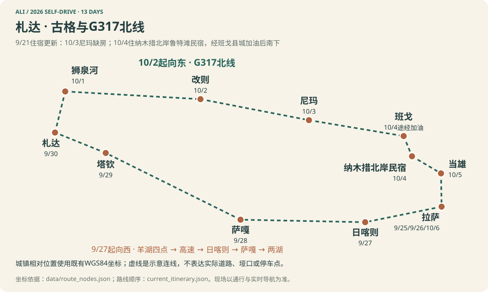
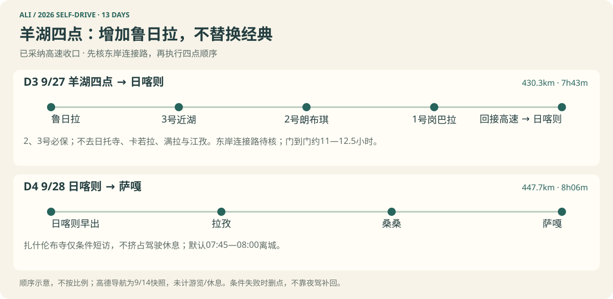
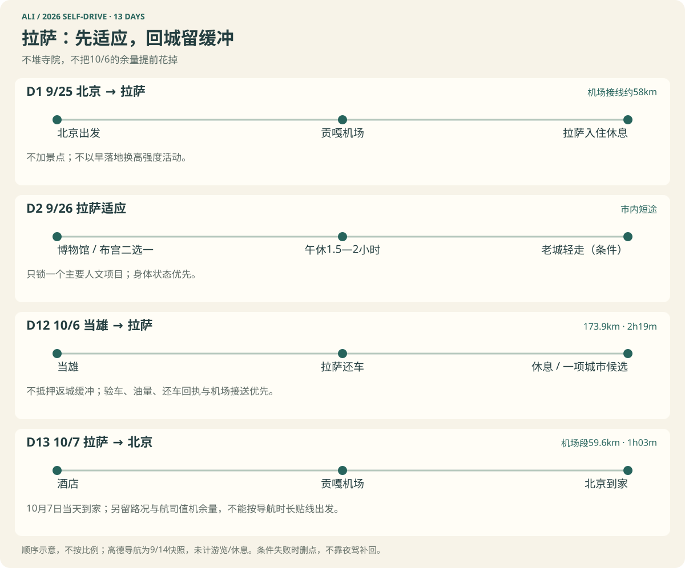
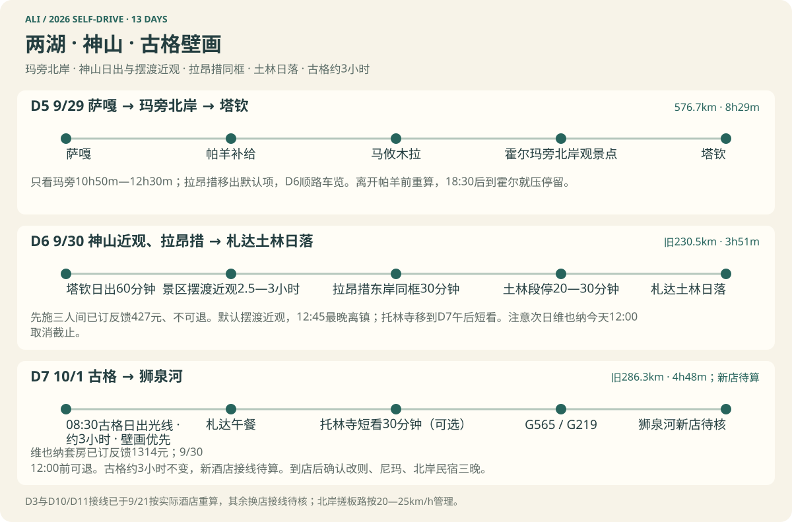
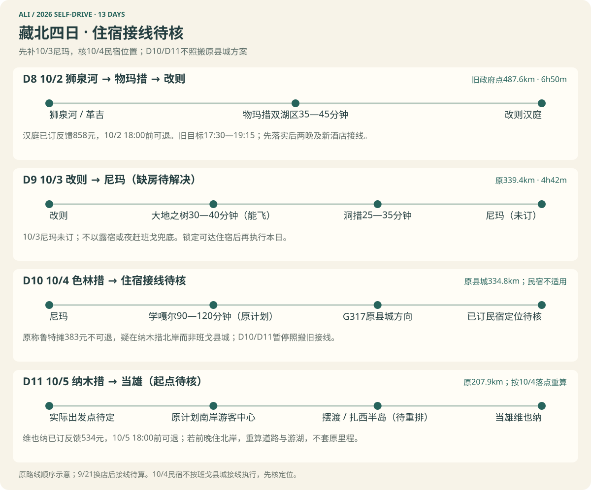

THE ROUTE / 路线全貌
向西走，再沿藏北回来。
拉萨出发，经札达古格，沿G317返回。12晚住宿不变，10月7日回到北京。
点选看详情 · 用＋/－缩放 · 非道路导航
选择地图地点查看详情
可点击地图中的景观点，查看海拔与所属日程。

版本说明与尚待核验的执行前提
2026年9月25日至10月7日，13天12晚，北京往返。
9月25日飞拉萨，9月26日在拉萨适应并选择一组城市人文，9月27日出发，10月7日必须返程。
冈仁波齐只观景，这次不转山。
2026-09-14优化落实｜日期和12晚住宿骨架不变。 羊湖保留经典2、3号并增加鲁日拉，采用四点后回接高速的推荐方案；D4扎寺改条件项，D5优先真正的两湖观景，D7保古格壁画，D10主排学嘎尔一带的地面观景。用户现已同意全部优化并确认自驾、至少两名可轮换驾驶员；D3舍弃卡若拉、满拉与江孜的取舍按本版采纳。依据见逐日复核与色林措深查。
执行前提未全部落实： 2026-08-28赴日喀则电子边境通行证停签公告的恢复及本路线适用性仍须主管部门确认；高德“色林错观景台”的暂停标签不代表整个湖关闭，也不能用近期游客经历保证10月4日入口开放。已确认自驾和至少两名司机，但车辆、合同/保险对全部驾驶员的覆盖与湖区准入仍待核验。现行路线图已改为9月14日版，HTML与PDF均由本稿导出；旧10月9日Word/PDF及历史OSRM路线图留档，不作为本次执行稿。
无人机意向后的二次复核：用户拟租无人机，尚未确定机型与电池；D8物玛措双湖区、D9大地之树提高观景优先级，D10美人尖保留条件窗。不是新增飞行许可或已租妥。逐日结论、厂商高海拔参数和新地图证据见二次复核。
这份优化路书的主题已经锁定札达·古格主线：保留羊卓雍措、玛旁雍措与拉昂措、冈仁波齐观景、古格遗址、G317藏北段、色林措和纳木措；山南不再与主线并列。选择古格，不是因为札达土林本身，而是因为古格遗址、壁画与西部佛教史在本次行程中更难被拉萨和日喀则的寺院体验替代。
图注｜新版总览以已核城镇WGS84坐标表达相对位置，以虚线表达旅行顺序；不是实际道路轨迹，不表示停车点或可通行保证。点击城镇可查看日期、住宿规划海拔与当天安排。羊湖、两湖、北线细节使用下方新版顺序图；真实导航截图及查询口径见高德证据。
出发前可以随便翻翻、看看
不用把它们当成行前作业；有兴趣就选一两本、看一两部，先对沿途的地理、人物和生活建立一点感觉。
几本书
- 陈业伟《西藏，永远之远》：摄影行记，阿里、羌塘和山南均有专章，是最轻松直观的视觉入口。
- 马丽华《西行阿里》：与本次目的地对应最直接的中文行旅纪实，适合先建立阿里的地理与历史感。
- 马丽华《藏北游历》：帮助理解改则—尼玛—班戈及羌塘沿线；其中的道路与社会观察属于特定年代。
几部影像
- 《第三极》：从自然环境与人的生活建立青藏高原的整体尺度。
- 《极地》：比宏观风光片更贴近具体人物，观看门槛也较低。
- 《冈仁波齐》：理解神山朝圣的身体经验与情绪背景；它是剧情片，不是转山指南。
- 《西藏一年》：跟随江孜普通人的家庭、工作与四季，把视线从雪山和寺院带回日常生活。
一页结论
最终路线为什么这样定
| 核心决策 | 结论与理由 |
|---|
| 拉萨前两晚 | D1、D2连住拉萨约3660m；实际停留是否达到48小时取决于落地时间，不能仅凭住两晚认定完成适应。D2只选一组城市人文并保留午休 |
| 人文主角 | 选择札达·古格，舍弃山南。古格遗址、壁画和西部佛教史比再增加一组在世寺院更有区分度 |
| D3羊湖 | 鲁日拉→3号→2号→1号，再回接高速；经典2、3号不作为常规删减项，代价是舍掉卡若拉、满拉、江孜段 |
| D4日喀则—萨嘎 | 默认07:45—08:00离城直达；扎什伦布寺只有开放、时段、人员状态与到达余量同时成立才短访，不用减少休息换寺院 |
| 色林措 | 学嘎尔一带留90—120分钟，再选一处G317合规公路视野；美人尖按无人机、准入与步行条件另作可选项 |
| 北线住宿 | 保持狮泉河—改则—尼玛—班戈的县城骨架，不为均分里程改住乡镇，优先燃油、供暖、氧气和医疗确定性 |
| 最后两天 | D11在纳木措深游后住当雄；D12返拉萨、还车并吸收延误。它看似宽松，却避免10月6日从班戈经纳木措长驱拉萨后衔接次日早班机 |
更新后的主方案按约3600—3700km准备，含机场接线、不含临时支线；不同日期高德与旧OSRM落点口径不同，不拼成虚假的精确总数。D3羊湖四点约11—12.5小时，D5两湖约11.5—13小时门到门，均需按最晚到达窗口判断是否降级；D4改早出发，D6/D7分担神山与古格，D9/D10不再用全部赶路填满。不能把这些长日描述为轻松行程。
四条硬底线
- 不夜驾。
- 症状优先于行程；症状加重即停止上升，必要时下降并就医。
- 车辆不驶离工程化道路，不开上草场、沙洲或封闭湖岸；步行只走当日允许且安全的路径。
- 道路、景区或车辆合同信息无法确认时，删除相应景点。
这套13天排法适合谁
| 判断 | 出发门槛 |
|---|
| 可以按本路书准备 | 至少两名被保险覆盖、能轮换的驾驶员；全员理解高反红线；接受景点因天气、道路或预约被删除；车辆与保险书面允许进入阿里、G317和纳木措候选线 |
| 需要先降级 | 第一次上高原、以往只到过拉萨而没有4500m以上过夜经验，或团队中有人恢复慢；以前在拉萨没事，不代表能连续睡在萨嘎、塔钦、尼玛和班戈 |
| 不应照原表执行 | 只有一名驾驶员、必须夜驾才能完成、不能接受删点，或任何成员出现进行性头痛、反复呕吐、步态异常、静息气促等危险信号 |
这不是“到了再看”的免责提醒。D1到店、D2早晚、D3公路出发前和日喀则升往萨嘎前，分别有一次真正的继续/停止判断。
地图怎么读
一张小红书路线图，用来建立空间感
实走资料与历史认知图只作研究参考，公开版不转载未确认授权的图片。XHS-6a5d9629
用户提供的大环线认知图，用来理解“中线”在哪里
实走资料与历史认知图只作研究参考，公开版不转载未确认授权的图片。
定制行程图，用来跟租车方和同行者对路线
定制执行图就是页首的“札达·古格与G317北线总览”主图。它显示：
- 札达·古格主线、狮泉河起的G317北线和12晚住宿日期；
- 羊湖四点的实际采用顺序、两湖观景点与古格壁画时间；
- 北线物玛措、大地之树、学嘎尔与纳木措各自的停留边界。
总览是城镇坐标示意，区域图是顺序图，均不伪装成道路实测轨迹。真实高德查询截图保留在研究附件；临行需按同样途经点重算。旧OSRM图和历史比较图不再承担执行指引，传统中线和圣象天门仍不加入，原因见本次取舍。
13天总览
下表里程优先采用9月14日高德已核算落点，行车预算为规划值，不是实时导航承诺；吃饭、必要休息、检查、停车与游览另计入门到门时间。新版示意图已同步D3/D5/D8/D9/D10的点位顺序；每晚由实际驾驶员重算。已确认至少两名可轮换司机，不因此缩短门到门预算或取消休息。
| 日程 | 当日主线与主题 | 里程 / 纯驾 | 当晚住宿 |
|---|
| D1｜9/25 周五 | 北京→拉萨；落地与恢复 | 机场接线约58km｜1—1.5h | 拉萨｜约3660m |
| D2｜9/26 周六 | 拉萨适应：一个人文主项目＋午休＋老城轻走 | 0—30km｜0—1h | 拉萨｜约3660m |
| D3｜9/27 周日 | 鲁日拉→羊湖3号→2号→1号→高速→日喀则 | 430.3km｜约8—9h行车预算 | 日喀则｜约3840m |
| D4｜9/28 周一 | 早出发→拉孜→桑桑→萨嘎；扎寺条件短访 | 约448km｜约8—9h行车预算 | 萨嘎｜约4485m |
| D5｜9/29 周二 | 萨嘎→玛旁G564观景点→拉昂错观景台→塔钦 | 576.7km｜约9—10h行车预算 | 塔钦｜约4680m |
| D6｜9/30 周三 | 神山晨观→札达；争取下午托林寺 | 230.5km｜4.5—5.5h | 札达｜约3730m |
| D7｜10/1 周四 | 古格3小时、壁画优先→狮泉河 | 286.3km｜5—6h全天行车预算 | 狮泉河｜约4280m |
| D8｜10/2 周五 | 狮泉河→革吉→物玛措双湖区→改则；主排一段航拍/看湖窗口 | 酒店旧主线486.2km｜7.5—8.5h | 改则｜约4425m |
| D9｜10/3 周六 | 改则→大地之树/洞措一带→尼玛；纹理航拍与地面看湖 | 339.4km｜5.5—6.5h | 尼玛｜约4530m |
| D10｜10/4 周日 | 尼玛→学嘎尔地面观景→G317湖景→班戈 | 334.8km｜5.5—6.5h行车预算 | 班戈｜约4715m |
| D11｜10/5 周一 | 班戈→纳木措游客集散中心/扎西半岛→当雄 | 207.9km｜4—5h公路预算，不含摆渡 | 当雄｜约4285m |
| D12｜10/6 周二 | 当雄→拉萨；返城、还车与延误吸收 | 173.9km｜2.5—3.5h | 拉萨｜约3660m |
| D13｜10/7 周三 | 拉萨→贡嘎机场→北京；当天到家 | 59.6km｜1—1.5h | — |
执行时只盯住三件事：
- D3的羊湖四点与D5的两湖都以具体接线、开放和停车成立为前提；不要用游客中心代表湖边观景，也不要把旧短版里程套到新机位。
- D8—D11保持县城住宿骨架；D10不是只能远看，但也不为航拍照片把车辆开上沙洲或封闭湖岸。
- D12吸收返城延误，10月6日晚住拉萨、10月7日到北京；不默认提前一天飞，也不延长到10月8日。
逐日行程
每张日卡先看里程与海拔，再看紧接着的当晚住宿：列出候选状态、房型、参考价、取消期限和需要确认的条件；未落实的夜晚明确写“待定”。住宿常规上限为每间每晚¥800，价格仍是2026年9月14日查询快照，均未预订。后面的住宿总表保留作横向比较，不是另一套住宿方案。
先看懂日卡里的导航点
下表只列本次真正值得专门停留的点。导航时先看落点是否贴着主路、景区入口，现场是否允许停车、车辆能否完全离开车道；如果软件把车导向草场车辙、湖岸便道或转山步道，立即取消该点。
| 场景 | 本次采用 | 明确不采用 |
|---|
| 羊卓雍措 | 鲁日拉→3号近湖→2号半山→1号高位；东岸连接路逐段确认 | 日托寺与额外东岸支线；四点之后不再经江孜 |
| 玛旁雍措/拉昂措 | 高德“玛旁雍错观景点”（G564）→“拉昂错观景台”；确认开放、铺装与停车 | 环湖、任意湖岸导航针、车辙机位；游客中心不等同观景点 |
| 冈仁波齐 | 塔钦镇内开阔视野，或G219旁现场确认可安全停车的位置；可条件升级为景区摆渡往返经幡广场 | 止热寺北壁、曲古寺、内转线、草场“大本营” |
| 色林措 | 高德“学嘎尔”作区域定位，现场核对公共停车与允许步行的入口；再选G317湖景 | 将地名针当悬崖入口、开车上沙嘴、进入被拦湖岸；不默认环湖 |
| 纳木措 | 东南岸游客中心停车；开放时换乘去扎西半岛 | 圣象天门、当果拉、湖岸便道和任何“避检查”路线 |
点选看详情 · 用＋/－缩放 · 非道路导航
选择地图地点查看详情
可点击地图中的景观点，查看海拔与所属日程。

图注｜已采纳鲁日拉→3号→2号→1号→高速→日喀则，2、3号均保留；卡若拉、满拉与江孜段不纳入。连线仅表达顺序。9月14日高德完整查询截图用于复核原始结果，不保证出行当天可达。
钟点是排程窗口，不是到点保证。小红书实走用来判断停留方式和当天会不会拖晚；里程、开放、接驳、合同与停车仍以官方公告、前一晚导航和现场管理为准。日卡中的信息按下面三层使用：
景观日会写到具体观景层级、停留顺序和离开时间；纯转场日只保留补给、换驾和一处合规短停，不为了让日卡显得丰富而硬塞网红点。
为了不把“会经过”写成“必须打卡”，每天的景观序列统一使用五个等级：
- 【主景】：当天真正值得专门保留时间的核心；
- 【短停】：基本顺路，但只有合法安全停车空间时才下车；
- 【车览】：景观确实存在于道路两侧，不设固定导航针或停车任务；
- 【条件】：只在开放、到达时间、体力和返程ETA同时成立时加入；
- 【不进】：地图上离得不远或社媒上很出片，但本次明确不改道进入。
| 标记 | 可以拿来做什么 | 不能拿来做什么 |
|---|
| 小红书实走 | 判断常见游览顺序、不同视角和容易拖时的环节 | 证明2026年开放、票价、路况或停车合法性 |
| 地图/天文推断 | 预估路线量级、太阳方向和候选落点 | 当成现场必然可停车、必见日照金山 |
| 官方规则 | 决定预约、车辆准入、摆渡和保护地边界 | 保证国庆当天没有临时调整 |
01DAY 01 / 9/25 · 南线向西
D1｜9/25 周五｜北京 → 拉萨
| 机场接线 | 纯驾 | 门到门 | 住宿 | 当日最高活动 |
|---|
| 约58km | 1—1.5h | 按航班时刻 | 拉萨｜约3660m | 约3660m |
当天重点不加景点；不以早落地换高强度活动。
当晚住宿｜优先候选，未预订：拉萨亿维特富氧酒店·沁氧供暖优享双床。9/25入住、9/27退房，连住2晚，双早均价¥307/间夜；有窗禁烟、30—35㎡。9/25 18:00前免费取消。实际在仙足岛，先确认房内供氧方式与时段、晚到保留及首单优惠；今晚到店后不再换酒店。
游览顺序与执行细节停留时间 / 删减 / 依据
- 落地顺序：机场取行李 → 进城入住 → 在酒店完成车辆/证件交接 → 就近吃饭 → 回房休息。航班早到也不去排需要长走或爬台阶的景点。
- 当日景观序列：贡嘎机场 → 雅鲁藏布江宽谷【车览】→ 拉萨河谷与城市轮廓【车览】→ 拉萨入住。这些是落地后第一次建立河谷尺度的窗外景观，不额外停车、不当成游览任务。
- 海拔：从平原快速抵达约3660m，是全程最大的一次“无过渡上升”。机场高速穿隧道，剖面图把无法可靠判断路面高程的区段改成灰色虚线，不把隧道上方山体当作车辆海拔。
- 当天安排：取行李、进城、入住、吃易消化晚餐，整理第二天随身物品。不要临时加布达拉宫、八廓街长走或夜生活。
- 车辆：如果是包车，让司机把车辆、证件和工具送到酒店验收；如果是租车，尽量提前完成线上资料，现场仍须逐项核对。
- 健康检查：到店时记录头痛、恶心、食欲、步态与静息呼吸，睡前再记一次，作为D2适应日基线。血氧只看个人趋势，不能替代症状判断；明显头痛、反复恶心、静息气促或无法正常进食时，D2取消参观并休息、就医，D3不得按原计划西进。
02DAY 02 / 9/26 · 南线向西
D2｜9/26 周六｜拉萨适应｜一个人文主项目＋午休
| 市内交通 | 纯驾 | 门到门 | 住宿 | 当日最高活动 |
|---|
| 0—30km | 0—1h | 约6—8h，含午休 | 拉萨｜约3660m | 市区｜约3700m以内 |
当天重点只锁一个主要人文项目；身体状态优先。
当晚住宿｜同店续住，未预订：拉萨亿维特富氧酒店，同D1的有窗双床，双早均价¥307/间夜。这是9/25—9/27同一笔两晚住宿的第2晚，不另订一间，也不将原订单9/25 18:00的免费取消截止误认为今天仍适用。明早退房前核实日喀则酒店的保留时间。
游览顺序与执行细节停留时间 / 删减 / 依据
点选看详情 · 用＋/－缩放 · 非道路导航
选择地图地点查看详情
可点击地图中的景观点，查看海拔与所属日程。

图注｜D2一个人文主项目加午休；D12先返城还车，城市候选不是必达。D1/D13机场段单独留交通与值机余量。此图不按地理比例绘制。
- 当日主角：不是“刷完拉萨”，而是在不继续升高的前提下完成一次高质量城市人文参访，并观察全员对3660m睡眠、步行和台阶的反应。全天只锁一个硬预约。
- 当日景观序列：西藏博物馆或布达拉宫二选一【主景】→午休1.5—2小时→大昭寺广场/八廓街轻走45—60分钟【条件】。只锁一个人文主项目，不把药王山、罗布林卡和寺院内殿全部叠加。
- 布达拉宫组｜兴趣、身体与预约都成立才选：按预约安排安检、参观和下行，预留2.5—3小时；午休1.5—2小时，傍晚八廓街轻走45—60分钟。布宫若是强期待，优先解决D2预约，但不拿爬台阶当适应测试。
- 建议组｜西藏博物馆＋老城轻走：馆内重点展区2—2.5小时，优先为古格、西部艺术和藏北牧业建立背景；不逐厅刷完。午休后只轻走45—60分钟，大昭寺内殿不再作默认加项。
- 与D12配对：D12只补尚未看过且预约、开放、精力均成立的一个项目；返城与还车优先，不保证回程一定能补布宫。
- 最低有效时间：一个主项目加午休即可；若身体不适，取消游览也不算行程失败。
- 先删项：先删第二个外观点、罗布林卡或小昭寺，再删大昭寺内殿和八廓街长走；不把色拉寺、哲蚌寺、甘丹寺、扎叶巴寺或楚布寺塞进同一天。任何人头痛、恶心、食欲差或步态异常时，取消票制景点并回酒店休息。
- 预约与开放：布达拉宫只认官方微信小程序“布达拉宫票务预订系统”，现行旺季规则不售当日票；西藏博物馆、大昭寺及其他寺院均须临近查看国庆专项公告。周末、节假日和临时活动可能改变开放与安检时段。布达拉宫票务须知｜西藏博物馆官方预约页
- 健康闸门：晚餐前再做一次症状复评。D2活动正常不代表可以无条件西进；D3早晨仍有进行性头痛、反复呕吐、步态异常、静息气促或无法正常进食时，停止上升并就医。
下面按唯一执行线列出D3—D13。卡片中的“纯驾”已经比导航自由流时间保守；“门到门”再计入观景、吃饭、检查、加油和必要休息。
所有钟点均为北京时间。西部天亮较晚，“早出发”指民用晨光出现后再动车，不用摸黑赶路。出发前一晚按当地日出、天气与导航ETA重算；如果只能靠夜驾才能完成，就切换短版或删点。
札达·古格主线
这条线把有限的前半程留给古格。札达土林只是沿途地貌；真正的理由是古格遗址、托林寺，以及西藏西部与克什米尔、印度之间的宗教艺术交流。
12晚住宿海拔见海拔与健康。已撤下与现行路线不匹配的旧累计里程剖面；不把旧道路高点位置套到新接线上。
点选看详情 · 用＋/－缩放 · 非道路导航
选择地图地点查看详情
可点击地图中的景观点，查看海拔与所属日程。

图注｜D5采用G564玛旁雍错观景点与拉昂错观景台，不再画游客中心短版充当两湖游览；D7保留古格壁画约3小时。连接线仅表达顺序，具体入口及开放仍需确认。D5高德截图｜D7高德截图。
03DAY 03 / 9/27 · 南线向西
D3｜9/27 周日｜拉萨 → 鲁日拉＋羊湖经典2、3号 → 高速 → 日喀则
| 里程 | 导航 / 行车预算 | 门到门 | 住宿 | 当日最高活动 |
|---|
| 430.3km | 高德7h43m；计划约8—9h | 约11—12.5h | 日喀则｜约3840m | 羊湖高位约5000m量级 |
当天重点2、3号必保；不去日托寺、卡若拉、满拉与江孜。东岸连接路待核；门到门约11—12.5小时。
当晚住宿｜优先候选，未预订：如家精选·日喀则科技路店，高级双床（制氧机＋加湿器）。9/27—9/28，¥271/间夜、无早；有窗禁烟、30㎡，9/27 18:00前免费取消。确认当晚供暖、氧机使用时段和晚到保留；¥288产品只有1份早餐，不按双早理解。
游览顺序与执行细节停留时间 / 删减 / 依据
- 明确保留：经典2号半山、3号近湖；鲁日拉是增加，不是替代。1号顺路短看，不再把3号排成默认删项。
- 导航顺序：拉萨酒店→鲁日拉→3号→2号→1号→回接高速→日喀则酒店。高德整段截图是实际查询结果，不代表9月27日道路必然开放。
- 已采纳取舍：不经卡若拉、满拉水库与江孜，不安排白居寺、宗山古堡和日托寺。这是为完整羊湖体验付出的路线代价，不是仅省一座寺院就自然腾出全部时间。用户已同意本轮全部优化，按四点后回接高速执行；连接路与通行条件仍须核验。
| 顺序 | 观看重点 | 停留预算 | 优先级 |
|---|
| 鲁日拉 | 东岸湖汊、半岛、村落和远山纵深 | 35—45分钟 | 新增主点；连接路不成立则取消 |
| 3号近湖 | 水面、岸线与地面视角 | 25—30分钟 | 用户明确保留 |
| 2号半山 | 湖湾与盘山公路的层次 | 25—30分钟 | 用户明确保留 |
| 1号岗巴拉 | 高位整体湖盆，补齐经典俯瞰 | 10—15分钟 | 顺路短看，拥堵时先缩减 |
- 计划节奏：07:20—07:30在光照允许时出发；四点合计95—120分钟，午餐40—50分钟，必要休息和道路弹性另留60—90分钟；目标18:30—19:30日喀则。不要把这些停留各压成5分钟来制造可行性。导航和排队明显增加时，先取消额外拍摄与1号长停，再评估鲁日拉，2、3号不作为常规删减项。
- 连接路是前提：高德明细有“未知道路”，只是道路名称不全，不能由此认定已铺装，也不能认定是烂路。实际驾驶方须按整条轨迹确认鲁日拉接经典线的铺装、施工、车辆适用和合法通行；失败则退回经典2、3号完整版本，不走车辙或夜驾硬保东岸。
- 为什么不全部顺收：四点再经浪卡子、江孜的已查样本为474.3km/9h41m，仅叠加基本观景、午餐与休息就约13—13.5小时，尚未专门游卡若拉和满拉。它不是本稿默认方案。对照截图
- 人文与观察：把羊湖看成嵌在山地中的复杂湖湾系统，而不是单一蓝色背景；高位看湖汊，半山看道路，近湖看岸线与村落生活。不同机位各有任务，减少重复摆拍。
- 健康与补给：前一晚备好早餐与路餐，午餐按实际回接路线安排，不再默认浪卡子/江孜用餐。拉萨两晚不等于已经适应；9月25—27日为中秋假期，仍须留排队余量。任何人不适先调整或停止行程，不用早起、赶路替代恢复。OFF-HOLIDAY
- 无人机只选一次：若租妥、空域与地面许可都成立，在鲁日拉或一个经典点择一，约15—20分钟从原停留预算中分配；不在四个点各加一次装卸起降，也不削掉2、3号的地面体验。
04DAY 04 / 9/28 · 南线向西
D4｜9/28 周一｜日喀则 → 拉孜 → 桑桑 → 萨嘎
| 里程 | 导航 / 行车预算 | 门到门 | 住宿 | 当日最高活动 |
|---|
| 约448km | 寺院起点高德8h06m；计划约8—9h | 直达约9.5—11h；短访另加 | 萨嘎｜约4485m | 约5100m |
当天重点扎什伦布寺仅条件短访，不挤占驾驶休息；默认07:45—08:00离城。
当晚住宿｜待定，不默认超预算：9/28—9/29住萨嘎县城，继续找¥800以内、有窗双床、独卫且供暖与热水稳定的房型。瀚晨有氧标间¥908超预算，暂不选；强吉福¥342虽便宜，但卫生与热水评价不稳，不列首选。没有足够环境优势证据，不自动加价；出发前必须落实具体酒店、晚到保留与取消条件。
游览顺序与执行细节停留时间 / 删减 / 依据
- 主方案：07:45—08:00离开日喀则，经拉孜、桑桑方向直达萨嘎，目标18:00—19:00入住。路上留热食、加油与必要休息，不把它们从行车预算里抹掉。
- 扎什伦布寺改条件项：保留50—60分钟聚焦参访的可能，但须前一晚确认有效入场时段、停车/安检、人员状态，并按剩余导航、至少1—1.5小时必要用餐休息及额外道路弹性倒排。若09:00才入场，10:00左右离寺后仍有约8小时导航，已经是晚到方案，不能写成稳妥默认。上一天偶然早到也不自动保证能补寺院。
- 参访如何有价值：若条件成立，优先问当日开放的强巴佛殿、十世班禅灵塔殿与讲解动线；短访不称完整深游。普通延误侵蚀安全到达余量时就取消，不再强保“10:15离城也一定来得及”。
- 自然序列：日喀则河谷农田和聚落→拉孜补给→昂仁、桑桑宽谷草场与荒原→萨嘎。路景变化本身值得看，安排一处有正规停车空间的10—15分钟宽谷短停，其余车览。
- 不加支线：萨迦寺、珠峰、佩枯措均不纳入；别把经珠峰的“日喀则—萨嘎”攻略车时套用到本日G318/G219线。
- 必保与删减：保按时抵达、补给和恢复；先删寺院条件项、沿途拍摄，再缩减非必要停留，必要休息不删。睡眠点由日喀则约3840m升至萨嘎约4485m，晚到与劳累不能当作常规代价。
- 执行前提：日喀则边境通行公告对本路线的具体适用性仍需主管部门确认；地图可算路线不等于证件有效或现场放行。
05DAY 05 / 9/29 · 南线向西
D5｜9/29 周二｜萨嘎 → 玛旁雍措＋拉昂措 → 塔钦
| 里程 | 导航 / 行车预算 | 门到门 | 住宿 | 当日最高活动 |
|---|
| 576.7km | 高德8h29m；计划约9—10h | 约11.5—13h，超到达窗口则降级 | 塔钦｜约4680m | 马攸木拉约5211m |
当天重点玛旁45—60分钟，拉昂30—40分钟；门到门约11.5—13小时。超窗删减，不拿游客中心冒充湖景。
当晚住宿｜待定，塔尔钦镇内：9/29—9/30先找¥800以内、独卫、有窗、供氧且可退的整间双床。欢漫¥1107/¥1149超预算且退订不宽松，暂不采用；若预算内找不到合格房，再单独讨论，不能用床位、内窗房或普兰县城酒店替代。长途日到店较晚，必须提前确认供暖、热水、供氧和保留时间。
游览顺序与执行细节停留时间 / 删减 / 依据
- 优化重点：优先真正看到两湖，不把到玛旁游客中心等同完成圣湖观景。高德已核“萨嘎→玛旁雍错观景点（G564）→拉昂错观景台→塔钦”576.7km/8h29m；这不是旧493.5km短版。路线和差异
- 导航顺序：萨嘎酒店→仲巴/帕羊择一补给→玛旁雍错观景点→拉昂错观景台→塔钦镇酒店。地图查到点位，不代表已确认接线、门票、当日开放与停车；前晚核对，禁止临时替换为任意湖岸针或环湖沙土路。
- 时间分配：07:45—08:00光照允许后出发，玛旁45—60分钟、拉昂30—40分钟，热食/加油/必要休息约60—90分钟，再留道路弹性。目标19:15—20:00到店，以当天实际光照和司机状态为上限；若重算超窗，按下方降级，不以夜驾兑现两湖。
- 沿途取舍：雅鲁藏布江上游宽谷、沙丘、公珠措与马攸木拉以车览为主；最多选择一个正规停车点停10—15分钟，不把各点都累计成任务。9月实走帖子报告过坑洼和长耗时，8h29m导航不能当保证。
- 两湖分别看：玛旁以开阔水面、山体与岸线为主；拉昂看不同的湖岸形态、湖色与远山。湖与神山同框取决于天气、实际落点和许可，不承诺一定拍到。
- 降级方案：前晚或当日发现两湖接线不合规、道路差或时间失守，优先保开放且能实际观湖的玛旁点，拉昂改合规道路远眺或取消。游客中心短线仅是交通备选，不称等价体验；修改后重新算全程，不沿用576.7km或旧短版的停留承诺。
- 神山窗口：D5只把在镇内顺便看到冈仁波齐当奖励，不等日落、不另驾车追机位。神山主要观景窗口放D6清晨。
- 有无人机也不扩大这一天：两湖区域未取得本次日期的具体飞行许可，本稿不排必达航拍。沿途沙丘、湿地只择一处短停，先保两湖本体和塔钦睡眠，不因租了设备就加环湖、芝乌寺或连续起降。
- 先删与补给：删沿途重复小湖、芝乌寺、环湖、沙洲和倒影野点；萨嘎加满，途中可靠油站补油。长日住宿需事先确认晚到保留、供暖与热水。
06DAY 06 / 9/30 · 南线向西
D6｜9/30 周三｜塔钦 → 冈仁波齐晨观 → 札达
| 里程 | 纯驾 | 门到门 | 住宿 | 当日最高活动 |
|---|
| 230.5km | 4.5—5.5h | 默认7—9h；早到托林约8—10h；摆渡升级约9—11h | 札达｜约3730m | 札达连接线｜约5130m |
当天重点不转山；托林寺争取今天参访，明早留给古格。
当晚住宿｜待定，房态未确认：9/30—10/1住札达县城，先核汉庭·札达土林店，再比较岗嘎底斯。本轮均未返回可订房型；按¥800以内有窗双床重新核价、供氧与可退期限。岗嘎底斯靠近托林寺，但设施与卫浴较旧；旧¥510不是当前确认价。
游览顺序与执行细节停留时间 / 删减 / 依据
- 海拔线：塔钦约4680m → 塔钦/G219沿线的冈仁波齐视野 → 连接线短时高点约5130m → 札达约3730m。观景点不绑定某一家餐厅或固定停车位，按当天开放与安全停车条件决定。
- 当日主题：上午专注看冈仁波齐南面，下午观察道路从高原翻越垭口、下降进入象泉河谷和札达土林的完整变化；如果到达足够早，再用托林寺补上一段札达文明背景。
- 当日景观序列：塔钦镇与冈仁波齐南面【主景】→ 经幡广场【条件/正规摆渡替换项】→ 门士乡方向的高原宽谷【车览】→ 隆嘎拉及札达连接线高点【车览】→ 桑达景观台或地质公园广场二选一【短停】→ 札达土林长距离下降段【车览】→ 象泉河谷、绿洲与县城【车览】→ 托林寺【条件】。丁丁卡、扎布拉、玛朗、霞义沟等土林支线【不进】。
- 导航顺序：默认版为塔钦酒店 → G219冈仁波齐候选观景点（现场确认允许停车且车辆能完全离开车道）→ 札达酒店 → 托林寺（早到条件项）。摆渡升级版改为塔钦酒店 → 神山游客接待中心 → 景区车往返经幡广场 → 札达酒店；两版二选一，摆渡版通常不再叠加托林寺。
- 地图/天文推断｜日照金山怎么等：08:05后再动车，08:15—09:30在塔钦镇内开阔视野，或G219旁现场确认可安全停车的位置看冈仁波齐南面。9月底当地日出约08:25—08:35；从南侧看，晨光通常先触到画面右侧的东南棱，云帽、逆光或山地遮挡都可能让整座山始终不“变金”。地图上的同名观景POI可能落在餐饮或私人经营点，不能当作官方停车场；只认贴着G219的正规停车空间，也不要搜索容易混淆的“冈仁波齐大本营”。峰体可能只露出几分钟，约09:30仍全遮就走，10:00为公路晨观版最晚离镇目标，不与摆渡版叠加。
- 官方规则｜不转山的近景升级：前一晚若已确认神山游客接待中心至经幡广场有当天往返摆渡、返程班次明确且排队可控，可用2—3小时替代G219晨观；最晚11:00离镇。社会车辆不得进入，经幡广场与G219二选一，不重复打卡。普兰县政府交通提醒
- 当日主角 / 最低有效时间：冈仁波齐晨观计划60—90分钟；光照允许后开始，约09:30—10:00离镇，不为云遮无限等待。正规摆渡2—3小时是替换项，不叠加公路观景；本次以公路晨观版争取札达下午人文时间。
- 来源边界：目前没有可靠实走资料足以把G219某一处写成固定机位。地图POI只用来与道路位置交叉核对，晨光方向来自天文计算；两者都必须让位于现场停车标识、景区管理与天气。
- 驶向札达｜两档时间轴：公路晨观版09:30—10:00离开塔钦，经G219、G565札达连接线/隆嘎拉一带，约15:00—17:30到札达；正规摆渡版最晚11:00离镇，约17:00—19:00到札达，通常不再参访托林寺。进入象泉河谷时，只在当日开放且设正式停车区的桑达景观台或地质公园广场二选一，停15—20分钟；停车或开放未确认就从车内看过，不进丁丁卡、扎布拉、玛朗、霞义沟等支线。2026年8月实走样本记录塔钦—札达约230km、约4小时，并拍到铺装主路与土林下降段；这里仍按4.5—5.5小时排车，不把暑期样本直接套到国庆。XHS-6a7de629｜XHS-691c604f
- 托林寺优先放今天：高德塔钦→札达230.5km/3h51m，计划仍按4.5—5.5小时行车。争取下午早到；若开放及末次入场允许，参访60—90分钟，理解后弘期与次日古格的关系。道路延误时删除，不把D7写成必能补位；两天只看一次。
- 必保：冈仁波齐清晨第二个天气窗口，并在天黑前进入札达河谷。
- 先删：不转山，不去止热寺、曲古寺和任何北壁机位；不把土林安排成多个付费或越野支线，不进霞义沟。
- 补给与换驾：塔钦出发前加油、检查胎压；进入札达前的连续下坡由状态更好的驾驶员承担。
- 人文与地点：冈仁波齐是跨传统圣山，本次只在开放公路或正规摆渡范围内观景。驶离塔钦后，路线翻越高点再下行进入札达河谷。札达土林主要由河湖相沉积层经流水侵蚀和风化形成，并不是丹霞；暖色层理看上去相似，成因不同。它是去古格路上的地貌背景，不是选择札达线的主要理由。
- 风险/撤退：札达是珍贵的回落夜，不为了日落拖晚入住。大风、落石或施工导致进度落后时，只保主路和住宿。
07DAY 07 / 10/1 · 南线向西
D7｜10/1 周四｜古格遗址 → 狮泉河｜托林寺仅条件加入
| 里程 | 纯驾 | 门到门 | 住宿 | 当日最高活动 |
|---|
| 286.3km | 5—6h全天行车预算 | 约9—11h | 狮泉河｜约4280m | 返程短时高点｜约5130m |
当天重点参访后余程268.4km / 4h23m，不重复加晨间路程。开殿、讲解与摄影规则临行核实。
当晚住宿｜条件优先，未预订：噶尔翰金柏雅·行政双床（氧气）。10/1—10/2，¥474/间夜、双早；有窗37㎡、部分禁烟，10/1 18:00前免费取消。先确认能安排无烟房、当晚供暖及具体供氧服务；若不满足则另选，不自动改住供氧尚未确认的鼎尚。
游览顺序与执行细节停留时间 / 删减 / 依据
- 海拔线：札达约3730m → 古格遗址约3740m并有台阶爬升 → 返程短时高点约5130m → 狮泉河约4280m。
- 当日主题：用半天读懂古格的遗址层级、洞窟、开放殿堂与壁画，再从象泉河谷返回阿里高原；古格是全天唯一不可压缩的主角。
- 当日景观序列：札达县城与象泉河谷【车览】→ 古格遗址外景与山脚洞窟/民居区【主景】→ 山腰开放殿堂、壁画与遗址层级【主景】→ 上层遗迹【条件/按开放范围】→ 托林寺【条件】→ 札达土林返程视角【车览】→ 高原面与狮泉河谷【车览】→ 狮泉河。皮央—东嘎石窟、香孜古堡、霞义沟和土林日落【不进】。
- 导航顺序：札达酒店 → 古格遗址游客入口/当日指定停车区 → 札达县城午餐 → 托林寺（条件项）→ 狮泉河酒店。皮央—东嘎、霞义沟和土林日落都不插入。
- 计划时间轴｜壁画优先：按核实的开放时段到场，古格留3小时、理想3.5小时。高德全天札达→古格→札达→狮泉河286.3km/4h48m；从古格游完起算经札达到狮泉河是268.4km/4h23m，不能再加一遍早晨札达到古格。以古格结束约12:00—12:30为目标，另留简餐、休息与道路弹性，争取18:00—19:00狮泉河；实际晚开则重算，不虚构固定开门钟点。高德与壁画复核
- 托林寺补位条件：优先D6完成。若未完成，D7仅在古格充分看完、寺院开放且剩余导航加参访、用餐、休息和道路余量后仍可天黑前到狮泉河时补；否则删除。不能拿古格壁画讲解时间交换托林寺。
- 壁画事先怎么确认：9月30日晚核实红殿、白殿及其他壁画殿堂是否开放、何时开门、是否需工作人员/讲解员带领、讲解安排与摄影限制。10月1日入园再问一次；红殿、白殿是优先问询目标，不是保证一定开殿。当天先看开放殿堂与壁画，再看洞窟/民居层级，剩余精力才考虑上层遗迹。现有路线已安排壁画，不需要另加一个“壁画景点日”。
- 3小时怎么花：开放殿堂与壁画讲解约60—90分钟，洞窟/民居和遗址层级约40—50分钟，其余留给台阶、休息和转场；以实际开放调整。优先问年代、题材与修复，不把所有壁画笼统说成10—11世纪原作。无人机不列为古格任务，不为外部航拍压缩内部讲解。
- 现场观看顺序：先问清当天开放范围和讲解场次，再决定爬多高。山顶王宫关闭时不影响核心参访；重点辨认洞窟、民居区、山腰殿堂和壁画，并向讲解员确认哪些是原作、后补或修复部分。2025年国庆样本到访时，上层王宫关闭、山腰部分殿堂开放；它说明“看完核心”不等于一定登顶，2026年的开放范围仍须当天确认。XHS-691c604f
- 当日主角 / 最低有效时间：古格是选择札达的核心理由，默认留3小时、理想3.5小时，最低不得低于2.5小时；优先洞窟/民居区、开放殿堂、壁画讲解与遗址层级，不把登顶当深度。若古格晚开、排队或体力下降，先删托林寺和土林停留，仍尽量保住古格本体的最低时间。
- 三个人物够用了：益西沃及其继任者菩提光代表古格王室的宗教赞助；仁钦桑布把译经、寺院营建和跨喜马拉雅知识网络连在一起；阿底峡于11世纪进入阿里并在托林寺讲学、著述。现场不要把每座殿堂和每幅壁画都署名给某一人，先问年代、修复与开放范围。OFF-TOLING-HISTORY
- 必保：古格遗址。托林寺只在古格按时结束、道路正常、人员状态良好时增加。
- 先删：托林寺、土林二次停留、所谓遗址日落。古格内部开放区域、摆渡与最晚入园时间必须在前一天复核。
- 补给与换驾：札达加满；到狮泉河后做全车检查、补油、采购北线食品和饮水，并确认改则、尼玛、班戈三晚住宿。
- 人文与地点：古格要放回10—11世纪西部政权与佛教后弘期理解：王室营建托林寺，仁钦桑布参与的译经、寺院营建与跨区域艺术网络连接克什米尔、南亚和高原内部。政权约在1630年前后的札布让围城与拉达克战争中终结，不能归为单一原因；遗址与寺院所见建筑、洞窟和壁画跨越不同时期，也经历维修、重绘与再阐释，勿一概当作始建原物。
- 风险/撤退：古格游览包含高原台阶。爬升中头痛、气促或步态异常加重，就在中层折返；只看开放区域，不与现场管理争执。
实走资料与历史认知图只作研究参考，公开版不转载未确认授权的图片。一颗栗子🌰 Birdy_C 拿布在藏地
神山圣湖：不要把四种传统讲成一个故事
冈仁波齐常被佛教、苯教、印度教和耆那教材料共同提及，但名称、宇宙观、人物和朝圣意义并不相同。印度教传统把Kailāsa与湿婆联系起来；佛教与苯教各有自己的圣山叙事和巡礼传统；耆那教传统则把这一地区与第一位祖师的解脱地叙事联系起来。这里只需知道它是跨传统圣山，不必在观景台上用一句“世界中心”抹平差异。CULT-KAILASH
玛旁雍措在印度教与佛教材料中有明确圣湖意义；拉昂措在印度教罗刹王神话和当地湖水叙述中位置不同。两湖在生态上相邻，不等于宗教地位相同。“圣湖/鬼湖”适合作为常见旅游称呼辨识，不能当作所有传统共享的客观分类。
G317北线｜色林措、纳木措
10月2日起从狮泉河进入藏北。D8—D11以县城为住宿骨架，沿途主要看盐湖、宽谷、牧场、县城和偶遇的野生动物。
点选看详情 · 用＋/－缩放 · 非道路导航
选择地图地点查看详情
可点击地图中的景观点，查看海拔与所属日程。

图注｜D8物玛措双湖区、D9大地之树与洞措、D10学嘎尔地面观景加美人尖条件窗、D11正规纳木措景区。图上不是停车坐标，也不代表飞行许可。高德实查：D8物玛措｜D9大地之树；D10入口细节见色林措深查。
08DAY 08 / 10/2 · 北线向东
D8｜10/2 周五｜狮泉河 → 革吉 → 改则
| 里程 | 纯驾 | 门到门 | 住宿 | 当日最高活动 |
|---|
| 486.2km | 7.5—8.5h | 9—10.5h | 改则｜约4425m | G317西段｜约4980m |
当天重点不同起点的酒店主线为486.2km / 6h33m，不混用。停车、湖岸准入和飞行许可分别核实。
当晚住宿｜待定，房态未确认：10/2—10/3住改则县城，依次核维也纳·阿里改则店、全季·阿里改则店、汉庭·阿里改则店。三家均未核到当日可订房型；目标是¥800以内、可退、有窗双床，确认房内供氧、供暖和停车。不误订先遣乡；今晚及随后尼玛、班戈两晚未落实，不视为北线住宿检查通过。
游览顺序与执行细节停留时间 / 删减 / 依据
- 海拔线：狮泉河约4280m → 革吉及沿线多次在4500m以上活动 → G317西段短时高点约4980m → 改则约4425m。
- 当日主题：G317长距离公路景观日，把主要停车预算留给物玛措双湖区。用户拟带无人机后，这里的浅滩、湖色和公路关系值得35—45分钟综合观察，而不是一路各停五分钟。不同帖子将邻湖写作达绕措、达热措或达热布措，本稿不擅自统一官方地名。
- 当日景观序列：狮泉河城镇与河谷【车览】→革吉/雄巴方向的宽谷、牧场和盐湖【车览】→聂尔措、别若则措【二选一短停】→物玛措双湖区【主景/条件航拍】→G317草原丘陵【车览】→改则。湖岸沙洲和村口土路不作为车辆执行线。
- 导航顺序：狮泉河酒店→革吉方向G317→物玛措区域（先核对主路附近停车点）→改则酒店。新增高德“噶尔县政府→物玛措→改则县政府”为487.6km/6h50m，主要走G317；起点与旧酒店方案不同，不将1.4km差值当精确机位绕行。湖泊POI不是停车场。新路线截图
- 时间轴：08:10左右见光后离开狮泉河→择可靠点补给/午餐→聂尔措或别若则措择一短停→物玛措双湖区35—45分钟，含准备、地面看湖、可能的合规起降和收纳→目标17:30—19:00改则。全日景观停车约50—65分钟，用餐、加油、必要休息另留。物玛措区域之后还有约93km至改则，不等日落才离开。
| 点位 / 路段 | 到这里看什么 | 停留预算 | 顺路性 | 本次采用 |
|---|
| 革吉以后G317宽谷 | 盐碱地、远山、牧场与笔直公路；主要从车内看 | 不单独计时 | 完全顺路 | 沿途主景 |
| 聂尔措 | 东行左侧的黄绿色湖盆；只在现成停车空间远看 | 5—10分钟 | 零绕行 | 可选 |
| 别若则措 | 东行左侧湖面与远山层次 | 5—10分钟 | 零绕行 | 与聂尔措二选一 |
| 物玛措双湖区 | 地面看湖盆，条件成立时航拍浅滩、邻湖和公路；不保证特定完整构图 | 35—45分钟，含起降准备与收纳 | 所在区域贴G317，停车针仍需核对 | 当日主观察窗；不下沙洲XHS-6a7dc604 |
| 湖岸、沙洲、村口土路 | 许多完整构图依赖无人机，下道还会进入软地和车辙 | 不安排 | 需要下道 | 明确删除 |
- 必保：保留物玛措区域的完整观察窗和改则住宿。小红书8月13日、7月24日帖子明确区分地面与航拍收益，但不保证当天双色、合法高度内一定双湖全景；如果不能飞就地面看湖，不为构图把车开上沙洲。二次复核证据
- 先删：先删聂尔措、别若则措的重复停车，再删不合规航拍、盐湖支线、动物追拍和日落等待。不要因为早到改则就临时冲尼玛；9月3日实走作者明确记录了合并后夜驾与后悔。
- 补给与换驾：狮泉河加满油并带足一天额外水和两顿无需加热食物；低于半箱主动补。
- 人文与地点：狮泉河是西端车辆检修、补给和行政服务节点；离城进入G317后，景观转向羌塘的湖盆、草场与保护地。公路把县城和沿线生活连接起来，空旷不等于无人。
- 风险/撤退：出发前完成北线六项检查：人员、未来72小时天气、车辆、油料、三晚住宿、道路消息。任一关键条件不满足，改走南线回撤。
09DAY 09 / 10/3 · 北线向东
D9｜10/3 周六｜改则 → 尼玛
| 里程 | 纯驾 | 门到门 | 住宿 | 当日最高活动 |
|---|
| 339.4km | 5.5—6.5h | 7.5—9.5h | 尼玛｜约4530m | G317中段｜约5030m |
当天重点主线上的拍摄窗口，不合并成长途日；大地之树不是色林措天空之树。
当晚住宿｜待定，房态未确认：10/3—10/4住尼玛县城，先核尼玛凯枫的¥800以内有窗、独卫、供氧双床及可退价。旧¥373普通标间不能当有氧房，尼玛大酒店仅作后备；文布南村的那仓卓姆、中象雄不在本次路线内。没有确认房态前，不把候选当成已落实住宿。
游览顺序与执行细节停留时间 / 删减 / 依据
- 海拔线：改则约4425m → 洞错等高原湖盆 → G317中段短时高点约5030m → 尼玛约4530m。
- 当日主题：洞措地面看湖＋大地之树纹理航拍，两种观察方式分工；不再把有辨识度的大地之树统一删成“车里看过”。前提是机型适用、实际空域与停车/起降合法。
- 当日景观序列：改则→洞措南岸/大地之树一带【条件航拍主项】→洞措G317公路视野【地面主景】→高原盐湖、草原与聚落【车览】→尼玛。具体先后依安全停车侧和实时导航，不为打点折返、跨车道停车；动物只偶遇。
- 导航顺序：改则酒店→高德“大地之树拍摄地”所在区域（地址216国道）→洞措一带合规公路视野→尼玛酒店。新查政府点起终的整段339.4km/4h42m，和原经洞措乡主线同量级，不需变更住宿。改则至拍摄地区域约75.8km，不能与洞措乡、湖岸入口都混称“约64km”。高德截图
- 时间轴：08:30左右改则出发→上午到洞措一带，树状地貌30—40分钟、地面看湖25—35分钟，邻近停车可合并→午餐与必要休息→目标16:00—18:00尼玛。观景合计约60—75分钟，其他类似小湖车览；不等到15:00后才拍所谓最佳光线，也不填文布南村或当惹雍措支线。
| 点位 / 路段 | 到这里看什么 | 停留预算 | 顺路性 | 本次采用 |
|---|
| 洞措公路视野 | 看湖面、草甸与远山；与乡镇/拍摄地入口分别核对，不导航湖心 | 25—35分钟 | G317同一主线区域 | 地面主停 |
| 改则—尼玛高原公路 | 宽谷、盐碱地与湖盆连续换景 | 车内观看 | 完全顺路 | 沿途主景 |
| 当天其他安全停车窗 | 湖色、远山或偶遇的野生动物 | 有额外余量再短停 | 只用现成停车空间 | 不与树状地貌和洞措再凑三个必达主停 |
| 大地之树拍摄地区域 | 高位看树状冲沟纹理，不保证合法飞行高度内完整全景 | 30—40分钟，含准备与收纳 | 高德整段339.4km/4h42m，处于主线 | 条件主项；先核空域、停车和起降 |
| 洞错湖边、星空机位 | 需驶入路况不稳的土路，也会侵占尼玛休息 | 不安排 | 明显下道 | 明确删除 |
- 沿路怎么看：先看地面湖色与云影，再在允许的范围内用无人机看水系/冲沟纹理。树状地貌的完整航拍因视角、高度与当天条件而异，局部纹理也算有效成果，不为拍全而超高、超视距或进沟。D9大地之树和D10天空之树是不同位置，本稿不两天重复加满。原实走｜新机位来源与限制
- 必保：洞措地面湖景与尼玛休息；大地之树是带合适无人机后的条件主项。不能飞、没有合规停车或人员状态不好时，将时间转给同区域地面观景，不驶入湖岸便道。
- 先删：洞错等沿途湖泊的支路、日落机位和任何临时“抄近道”。
- 补给与换驾：改则出发前加油；进尼玛后立即补油、确认色林措—班戈道路和次日天气。
- 人文与地点：改则的学校、医院、商店，以及长期公路建设和养护，都是羌塘当代生活的一部分；沿线县城并非风景之外的补给背景。草场中的放牧与牲畜移动同样塑造道路体验，遇牧群应主动减速。
- 风险/撤退：强横风、暗冰和疲劳比里程数字更危险。若前半程速度明显低于预期，只保住宿。
10DAY 10 / 10/4 · 北线向东
D10｜10/4 周日｜尼玛 → 学嘎尔＋色林措湖景 → 班戈
| 里程 | 导航 / 行车预算 | 门到门 | 住宿 | 当日最高活动 |
|---|
| 334.8km，不含可选支线 | 高德4h37m；计划5.5—6.5h | 约9—10.5h | 班戈｜约4715m | 公路约4850m；不预设攀爬高度 |
当天重点美人尖接线未计入导航值；学嘎尔是区域针，不是已核停车场。不加天空之树或环湖。
当晚住宿｜待定，房态未确认：10/4—10/5住班戈，先核星际星空、佳境，维也纳班戈备选。目标¥800以内的整间双床，重点确认房内供氧时段、供暖、热水、独卫与可退期限；三家均未核到可订房型，旧¥335普通双床不是全天供氧房。
游览顺序与执行细节停留时间 / 删减 / 依据
- 这天值得玩完整：主排“学嘎尔一带地面看湖90—120分钟＋G317另一处合规公路视野20—30分钟”，不是只在游客中心打卡。9月12日实走帖有停车、步行到湖边和左侧高位的描述；高德已核尼玛→学嘎尔→班戈334.8km/4h37m，说明主线时间容得下认真停看。色林措证据与图像核对
- 位置层级要分清：高德“学嘎尔”是区域地名针，不是经过核实的山顶或停车入口；单独查询显示它与G317有约660m“未知道路”接线，不能照针开车下去。“色林错观景台（暂停开放）”、游客服务中心、学嘎尔、网红悬崖和美人尖不能当成一个地点。不同作者甚至对同名入口有分歧；到区域后核对停车标识、步行入口、收费与开放，绝不让导航直接带车上山。
- 导航顺序：尼玛酒店→学嘎尔区域的当日开放停车点→G317东行湖景→班戈酒店。达则措、恰规措顺路看；不临时拐文布南村、当惹雍措，不做环湖。美人尖线索在学嘎尔以西，若选它，应先看再向东，不能到了学嘎尔才往回找。
| 点位 | 实际体验与证据 | 本次安排 |
|---|
| 学嘎尔一带湖岸 | 9月12日作者报告停车后步行近湖；其图片有地面湖景，不必有无人机才值得去 | 主选90—120分钟，含停车核验、允许范围内步行、看湖与休息 |
| 学嘎尔附近高位 | 近期帖子提到左侧石山，但“悬崖入口”名称有歧义，照片也未证明全程步道与耗时 | 只在有明确允许、安全可走路径且全员状态好时替换部分湖岸时间；不上无防护崖缘、不追求登顶 |
| G317湖岸/正式栈道 | 对比主湖尺度、色带与远山，给学嘎尔之外的整体视角 | 另留20—30分钟；具体开放点现场核对，不把暂停POI当保证 |
| 美人尖 / 扎根藏布线索 | 多帖指向贝嘎村附近、学嘎尔以西；完整弧线更依赖航拍，且有刮底、陷车痕迹及后续仅许步行反馈 | 可选30—45分钟；先确认有无无人机、准入与安全步行落点，不把车开上沙嘴，不算已落实主项 |
| G562 S弯 | 主要是航拍构图；不同帖说离路口1.8km或5—7km，且有道路编号笔误 | 不设必达；有合规飞行条件才另核准确停车针，不拿错机位做精确绕行预算 |
| 多嘎 | 作者帖推荐，但评论有8月27日未能进入反馈；高德同名点存在误匹配 | 暂不主排，不能把同名地名的导航距离当成已核湖岸入口 |
- 计划时间轴：08:10左右尼玛出发→沿路合规短停合计不超过20—30分钟→约11:30—12:00抵达学嘎尔一带→含路餐、步行与看湖安排到13:30—14:00→G317东行另一处视野20—30分钟→目标17:00—18:30班戈。抵达时间是本稿预算，不是网友或导航保证。
- 拟带无人机后的优先级：美人尖提高为优先核验的可选项；若入口、停车与飞行均成立，放在学嘎尔之前留30—45分钟。相应把学嘎尔抵达目标放宽到约12:00—12:30，仍争取14:30前离开主停区、18:30前班戈；不再叠加天空之树、S弯和多嘎。准入不成立就保原地面版，不用沙洲驾车弥补。
- 离开闸门：14:30原则上离开学嘎尔主停区；高德该区域→班戈为170.1km/2h15m，实际再加休息、另一处观景与30—60分钟道路弹性。每次停车前重算剩余时间。早段用了美人尖可选时间，就不再叠加S弯、多嘎或追夕阳；晚到、风大或体力不佳时保湖岸地面体验、删攀爬与航拍。
- 看景方法：先看湖盆与远山，再比较岸线、近浅远深的色带和天气变化；不必为了网友的高空图复刻沙嘴形状。晴阴变化可能比多跑一个点更有内容，给同一个位置留等待时间。
- 收费与准入：多篇2026年5—8月笔记出现约10元/人的进入或卫生收费，属于历史个案，不是10月4日官方票价或进入保护地的许可。暂停标签不能推出整个色林措关闭，近期到访同样不能保证未来每个入口开放。
- 必保 / 先删：保色林措实质观景与班戈住宿；先删重复沿途小湖、航拍支线和攀爬。现场主入口不开时换开放合规公路视野，不突破围栏或车辙下湖岸。
- 当晚节奏：班戈是最高住宿夜，不安排湖边露营、星空或日落后赶路。尼玛加满油，路餐自带，咖啡车和烧烤摊仅是网友当时见到的服务，不当固定补给。
11DAY 11 / 10/5 · 北线向东
D11｜10/5 周一｜班戈 → 巴木措 → 纳木措南岸 → 当雄
| 里程 | 纯驾 | 门到门 | 住宿 | 当日最高活动 |
|---|
| 207.9km | 4—5h公路预算，不含摆渡 | 约8.5—10.5h | 当雄｜约4285m | 那根拉｜约5186m |
当天重点景区另留3—4小时；车辆合同、保险与景区准入独立核验。不去圣象天门。
当晚住宿｜优先候选，未预订：维也纳·当雄县政府店，高级双床（24小时弥散供氧＋加湿器）。10/5—10/6，¥544/间夜、双早；有窗，10/5 12:00前免费取消。页面标可吸烟，需确认无烟安排和当晚实际供暖、供氧；不为便宜改订¥444窗外遮挡且只含1早的标准房。
游览顺序与执行细节停留时间 / 删减 / 依据
- 海拔线：班戈约4715m → 巴木措湖面约4560m、环湖公路观景点约4760m → 纳木措湖面约4720m、东南岸游客中心约4830m → 那根拉约5186m → 当雄约4285m。扎西半岛约4763m，只有开放且按摆渡规则进入时才会到访。
- 当日主题：巴木措只作湖盆序章，把真正的时间留给纳木措南岸、念青唐古拉山横向全景与扎西半岛步行；住当雄的意义，就是不把这段深游压缩成赶回拉萨的打卡。
- 当日景观序列：班戈 → 巴木措公路高位湖盆【短停】→ 纳木措北岸与念青唐古拉山远景【车览】→ 纳木措东南岸游客中心【换乘】→ 扎西半岛湖面—念青唐古拉山横向全景【主景】→ 合掌石、湖湾、短栈道或浅滩【主景/按开放范围】→ 扎西多寺【条件/自然经过才识别】→ 那根拉回望【条件短停】→ 当雄。当果拉、圣象天门、免费野机位和湖岸车辙【不进】。
- 导航顺序：班戈酒店 → 巴木措环湖主路允许停车且车辆能完全离开车道的位置 → 纳木措东南岸游客中心 → 景区车往返扎西半岛 → 那根拉现场允许停车的位置（条件项）→ 当雄酒店。游客中心是换乘点，不等于已经游完纳木措。
- 时间轴：08:00见光后离开班戈 → 巴木措停10—15分钟 → 中午前后到游客中心 → 若开放，排队、景区车往返和湖边步行合计3—4小时，其中争取1.5—2小时真正用于湖边步行与静看 → 经那根拉下撤 → 17:00—19:30当雄。10月4日晚必须同时取得末班摆渡、预计排队与“游客中心→当雄”实时ETA，并以19:30前到店倒推出最晚离开游客中心的时刻；一到该时刻立即下撤，不为日落续停。
| 点位 / 路段 | 到这里看什么 | 停留预算 | 顺路性 | 本次采用 |
|---|
| 巴木措公路高位视野 | 完整湖盆、湖色与远山；不下到湖岸 | 10—15分钟 | 完全顺路 | 主保 |
| 纳木措东南岸游客中心 | 正规停车与换乘节点；到游客中心不等于已经游完湖区 | 办理换乘计入总预算 | 主线 | 必到 |
| 扎西半岛 | 在开放边界内依次看湖面—念青唐古拉山横向全景、合掌石/湖湾、短栈道或浅滩；扎西多寺仅在开放且自然经过时识别，不另绕行 | 景区总预算3—4小时；争取有效步行与静看1.5—2小时 | 正规摆渡 | 开放且合规时必保 |
| 那根拉 | 下撤途中回望纳木措与念青唐古拉 | 5—10分钟 | 完全顺路 | 天气好且有正规停车空间再停 |
| 当果拉、免费野机位、圣象天门 | 需要额外徒步或驶入非工程化支路，还牵涉合同与开放风险 | 不安排 | 偏离执行线 | 明确删除 |
- 扎西半岛怎么走：先看湖面与念青唐古拉山的横向关系，再决定是否走到合掌石、湖湾、栈道或浅滩；这些名称只用于现场识别。票价、开放范围和末班时间以2026年国庆公告为准，不为日落推迟下撤。XHS-6a5b2d2a
- 当日主角 / 最低有效时间：纳木措是当天主角，景区换乘、湖边步行与静看合计至少3小时，理想为4小时；其中真正湖边步行与静看争取不少于1.5小时。巴木措只留10—15分钟作空间序章。若景区排队压缩了有效湖边时间，先删那根拉停车和所有日落等待，仍须按计划下撤当雄。 湖边以短距离慢走、坐看湖色与远山为主，不必绕完整个半岛；无人机不作为景区深游的必要条件，不因此改走圣象天门或三生石。
- 收口顺序怎么理解：近期实走个案也按“班戈—巴木措—纳木措—拉萨”记录空间顺序，并显示巴木措适合在环湖公路高位短看；另一个把圣象天门烂路、景区换乘和回拉萨叠在一天的个案，最后明确感到疲劳和审美透支。它们不能证明实时开放、租赁车合规或任何“免费野机位”可用，却说明本版把纳木措之后拆住当雄更合理。XHS-6a75f74f｜XHS-6a5f4dca
- 准入闸门与主角：只有道路开放、景区正常接待、车辆合同明确允许，才进入纳木措南岸；闸门成立后，扎西半岛是当天主角，晚上必须住到当雄。
- 先删：圣象天门、当果拉等野观景点、草地车辙、湖岸便道和追日落。
- 补给与换驾：班戈加满油；驾驶员在进入纳木措段前换班；随身保暖层不得放在后备箱深处。
- 人文与地点：班戈县公开资料把纳木措列为圣湖，并记录信众前来朝圣的传统；湖泊同时处在有牧场、营地和聚落的高寒流域。这里既不是无人背景，也不据此扩写朝圣路线、仪式或现行开放安排。
- 风险/撤退：前一晚同时向景区、当地交通/交警和租车方核对道路与车辆合同。任一项无法确认，删除纳木措，班戈经确认开放的主路前往那曲或按当地指引下撤。
12DAY 12 / 10/6 · 北线向东
D12｜10/6 周二｜当雄 → 拉萨｜返城收口
| 里程 | 纯驾 | 门到门 | 住宿 | 当日最高活动 |
|---|
| 173.9km | 2.5—3.5h | 3.5—5h；早到可加一个轻量市区项目 | 拉萨｜约3660m | 沿途短时约4600m |
当天重点不抵押返城缓冲；验车、油量、还车回执与机场接送优先。
当晚住宿｜优先候选，未预订：拉萨亿维特富氧酒店·沁氧供暖优享双床。10/6—10/7，¥321/间夜、双早；有窗禁烟，10/6 18:00前免费取消。去程用过首单优惠后未必仍是此价；核实供氧与次日机场接驳。这一晚保留作返城收口，除非10/6晚离藏方案已经完整确认，否则不先取消。
游览顺序与执行细节停留时间 / 删减 / 依据
- 海拔线：当雄约4285m → 沿途短时约4600m → 拉萨约3660m，睡眠海拔明显下降。
- 当日主题：安全下降、完成车辆交接，并用一个未完成的拉萨城市人文项目为全程收口；这一天的价值是把返程可靠性和城市参访同时做好，而不是再开远郊支线。
- 当日景观序列：当雄草原与念青唐古拉山东段【车览】→ 羊八井地热谷地貌【车览，不进景区】→ 拉萨河谷【车览】→ 返城、入住与还车 → 西藏博物馆【条件主选】或大昭寺内殿＋八廓街【条件替换】。纳木措回头路、甘丹寺、扎叶巴寺和楚布寺【不进】。
- 当天主线：08:30前离开当雄 → 沿G109/京藏高速按实时通行下撤 → 12:00—14:00回到拉萨 → 入住、还车、午餐和整理装备。10月6日晚到达拉萨是硬约束；不把这一天当成可继续滞留纳木措或另开远郊支线的空白日。
- 为什么10/5不赶回拉萨：D11在纳木措游览后只到当雄，给景区换乘、扎西半岛步行与静看留下3—4小时，也避免把班戈—纳木措—拉萨约386km和景区游览挤成一个极端长日。真正被放松的是纳木措，不是假装G317其他长转场都因此变成深度游。
- 按时返城后的默认收口：若14:00前完成入住与车辆交接、所有人状态正常，优先补D2未完成的一个项目：D2看过布达拉宫，则选西藏博物馆2—3小时；D2看过博物馆，则只在预约成立时补大昭寺内殿＋八廓街1.5—2.5小时，或直接在八廓街轻走45—75分钟。14:00后到达、项目闭馆或任何人不适，全部取消。
- 馆内怎么取舍：若选西藏博物馆，优先历史文化常设展和可衔接本次路线的吐蕃、阿里、西部艺术内容，不逐厅刷完。XHS-6a7eb184 若选大昭寺，按现场游客动线参观，出寺后只走一小圈八廓街；不再叠加色拉寺、哲蚌寺或远郊寺院。XHS-6a477065
- 当日主角 / 最低有效时间：主角是安全返城和返程准备，不是补景点；还车验车、行李整理、航班与机场交通复核至少留2小时。城市项目只使用提前到达产生的净余量。
- 先删：先删全部市区项目，再删非必要购物；不删返城、还车、休息和机场准备。甘丹寺、扎叶巴寺、楚布寺以及任何纳木措回头路明确不安排。
- 补给与交接：还车前拍摄车辆四周、轮胎、油表、里程和合同交接，保存验车视频与凭证；高峰期提前约好10月7日送机车辆。
- 风险/撤退：本版没有完整空白缓冲日。若D11因天气留在班戈或改住那曲，D12整天用于下撤并同步联系航司、保险和地面交通；不靠夜驾把风险转移给10月7日。
13DAY 13 / 10/7 · 北线向东
D13｜10/7 周三｜拉萨 → 贡嘎机场 → 返程
| 里程 | 纯驾 | 门到门 | 住宿 | 当日最高活动 |
|---|
| 59.6km | 1—1.5h | 另加航司要求的提前到场时间 | 返程 | 约3660m |
当天重点10月7日当天到家；另留路况与航司值机余量，不能按导航时长贴线出发。
当晚住宿｜不新增旅行酒店：今天从D12拉萨酒店退房，10/7必须到家。不要为了低价机票增加10/7外地过夜、拖到10/8才抵京；返程尚未出票，仍需落实合规航班。
游览顺序与执行细节停留时间 / 删减 / 依据
- 当天安排：只做机场转场，不加景点。10月6日晚必须已经回到拉萨，不把长途回撤留到返程当天。
- 当日景观序列：拉萨城区 → 拉萨河谷【车览】→ 雅鲁藏布江谷与贡嘎机场【交通】。这一天不设任何停车景点，不让景观序列影响值机余量。
- 离店时间：以前一晚航司值机要求为基准，用“酒店至机场实时ETA＋30—60分钟国庆道路缓冲”倒排，并在前一晚写死叫车和离店时间。
- 硬规则：如果10月6日晚仍未回到拉萨或机场通道有持续风险，优先处理航班和地面交通，不靠夜驾解决。
G317到底会看到什么
舍弃传统中线，不等于舍弃藏北。两者经常在商业产品和社交平台里被混叫，实际道路、住宿和风险完全不同：
| 项目 | 本次保留的G317北线 | 完整传统中线 |
|---|
| 走法 | 狮泉河—革吉—改则—尼玛—色林措—班戈 | 狮泉河—雄巴—亚热—仁多—措勤—扎日南木措—当惹雍措/文布南村—尼玛等组合 |
| 道路角色 | 国家公路主干，县城之间连续转场 | 已有多段四级公路、沥青工程与养护路段，但关键景观连接仍不是可无条件依赖的连续高等级公路 |
| 主要内容 | 盐湖、宽谷、草原、雪山远景、野生动物、牧业与县城；色林措是明确主景 | 扎日南木措、当惹雍措/达果雪山与文布南村最不可替代；仁青休布措、扎布耶等是加分项 |
| 主要风险 | 长距离、高海拔、横风、暗冰、补给稀疏 | 除上述风险外，还可能遇到离线轨迹、陷车、陡坡盲区和路线识别问题 |
| 本次判断 | 保留，且色林措是明确主景 | 不走，也不从帕羊、仁多方向“斜切”去尼玛 |
G317的看点常常延伸几十公里：公路通向天际，咸水湖在远处变化，牧群和野生动物偶尔穿过。按打卡数量衡量会觉得稀疏；逐湖下道靠近，又会失去走主干公路的时间优势。
实走资料与历史认知图只作研究参考，公开版不转载未确认授权的图片。XHS-6a8e55a8
为什么不切中线
传统中线的核心是扎日南木措、当惹雍措、达果雪山和文布南村，值得单独安排。但在保留色林措、纳木措且不夜驾的前提下，完整中线至少还需1—2天。从萨嘎或帕羊向尼玛“斜切”也不会真正省出一天，反而会增加路况、补给和救援的不确定性。
本次固定走狮泉河—改则—尼玛—色林措的G317主线。狮泉河也是进入藏北前做全车检查、补给和最终路况判断的合适节点。
纳木措：拟走工程化主路，合规与开放逐项核验
图注｜2026-09-14版：10月5日班戈出发、正规景区游览、住当雄；10月6日返拉萨还车。图中导航时间不含景区摆渡和游览，不代表道路/合同准入已核验。高德原始查询截图。
拟采用的主线顺序是：
班戈 → 巴木措 → 纳木措南岸景区入口/游客中心 → 当雄。
扎西半岛若开放，按景区当日换乘和车辆管理执行。班戈—巴木措—南岸—当雄足以完成环线收口；圣象天门不进执行线，也不记录检查点、推测执勤时间或绕开管理。
道路名称应分开写：S206当雄县城至纳木湖乡段，以及纳木措湖至班戈县段的环湖公路。公开工程资料能证明这是一条工程化连接，但不能保证2026年10月5日每一段都开放、全程无施工、景区入口不调整，或任何一辆租赁车都被合同允许进入。
租赁车辆需要四份明确答案
- 经营者依法备案，车辆与承租关系能形成完整记录；
- 随车有行驶证原件，车辆信息、车牌、车架号和合同一致，全部实际驾驶人写入合同并受保险覆盖；
- 门店书面确认车辆允许进入阿里、G317、班戈、纳木措和当雄，并写明禁行道路、救援与换车范围；
- 保单中的号牌、VIN和使用性质与实际租赁一致，偏远地区事故、救援、拖车、轮胎和单方事故责任写清。
图注｜制作日期：2026-08-28。本图是对租赁管理规定与合同核验项的来源摘要，用于行前询证；它不是法律意见，也不是实时路况证据。
若门店只说“被查了再处理”，或明确写着禁行纳木措，就换供应商、改用合规包车/小团，或删除纳木措。小红书上“我没被查”只能说明某一次经历，不能替代合同和保险。
三种现场分支
| 10/4晚核验结果 | 10/5怎么走 | 10/6怎么走 | 对返程余量的影响 |
|---|
| 道路、景区、车辆合同均成立 | 班戈→巴木措→南岸→当雄 | 当雄→拉萨 | 按主线执行；10/6仅保留返城与交接余量 |
| 纳木措或车辆合同不成立，但班戈—那曲主路正常 | 删除纳木措，班戈→那曲或当雄 | 从当晚节点返拉萨 | 景点取消，优先恢复返程确定性 |
| 天气或管制导致10/5无法安全离开班戈 | 班戈续住 | 10/6按最新开放道路全力下撤 | 无完整备用日；航班风险显著上升 |
第三种情况不能预先写出“保证10月7日赶上”的承诺。如果10月6日下午仍无法到达那曲或更低风险节点，应当立即联系航司、保险与地面交通，不等到10月7日早上再处理。
撤退方案
10月2日狮泉河北线出发条件不满足
北线出发前同时检查：人员状态、未来72小时天气、轮胎/刹车、油料续航、改则/尼玛/班戈订房、最新道路消息。任一关键项失败，按南线回撤：
| 日期 | 撤退路线 | 执行原则 |
|---|
| 10/2 | 狮泉河→塔钦 | 纯转场，不重游支线 |
| 10/3 | 塔钦→萨嘎 | 两湖已看过，不做环湖 |
| 10/4 | 萨嘎→日喀则 | 天黑前入住 |
| 10/5 | 日喀则→拉萨 | 正常回到低海拔城市 |
| 10/6 | 拉萨安全余量；状态正常才补一个可取消的市区项目 | 不新增远途 |
| 10/7 | 机场返程 | — |
这条撤退会删除G317、色林措和纳木措，但仍保住羊湖、神山圣湖与古格。安全回到拉萨是撤退方案的目标，不再用10月6日补远途湖泊。
已经进入G317后
进入改则以后，不设计一条看似精确的“万能绕行”。道路阻断时，应留在最近县城，向交警、应急、酒店和同向车辆核实，优先走已确认开放的国省干道。遇到积雪、暗冰或封路，等待通常比陌生便道更快，也更容易获得救援。
海拔：不只看住宿点
新版图只画12晚住宿海拔，横轴为真实入住日期，不再用旧路线累计里程。白天活动与垭口海拔仍须看日卡：住宿点、湖面、游客中心和垭口是不同位置，不能相互替代。
同一个景区可能有几种海拔。纳木措湖面约4720m，东南岸游客中心约4830m，扎西半岛约4763m；图上标“南岸游客中心4830m”，不是把整片湖面写成4830m。
读图时重点看三段压力：
- D4从日喀则升到萨嘎；
- 两湖与塔钦之后，会在札达回落到约3730m，也会在狮泉河回落到约4280m；但D8—D10住宿仍连续升至改则约4425m、尼玛约4530m和班戈约4715m；
- D10班戈是最高住宿夜，D11仍要经过纳木措和那根拉，抵达当雄后才明显下降。
图注｜曲线仅表示睡眠点；白天仍可能经过5000m以上垭口。数字沿用 data/route_nodes.json 中有来源说明的规划海拔，并非具体酒店测量，也不是医疗安全阈值。
高原健康：症状优先于行程
D2在拉萨适应，D3才进入羊湖高位观景与长途转场。即使已连续住两晚拉萨，这一节奏仍比常见的渐进适应方案激进；行程是否继续，不由“已经花了多少钱”决定。
每天三次复评
早起、午餐和入住后，每个人都回答六件事：头痛程度、是否恶心、食欲、步态、静息呼吸、精神状态。固定一位同伴交叉观察，避免本人因为兴奋或怕拖累团队而低报症状。
- 轻度头痛、乏力、食欲差、轻微恶心或睡眠差：停止增加活动，休息并观察，不再上升。
- 走路不稳、意识或行为异常、静息时明显呼吸困难、胸闷咳嗽加重、嘴唇发紫：立即联系医疗并尽快下降。
- 氧气瓶、制氧机和“供氧房”只能临时支持，不能替代下降，也不能证明第二天可以继续升高。
有心肺疾病、严重贫血、睡眠呼吸问题、妊娠或既往严重高反者，应在出发前向旅行医学或相关专科医生咨询。乙酰唑胺等药物需要结合个人病史决定，本路书不提供个体剂量。MED-CDC MED-WMS
三个健康与保险闸门
- 日喀则到萨嘎是第一个睡眠海拔大幅上升夜。症状进行性加重就停止西进。
- 班戈约4715m，是全程最高住宿夜。到店后只休息、进食、保暖，不安排星空或夜间拍摄。
- 保险必须覆盖途中超过5000m的短时活动和至少4715m的住宿，并核对医疗转运、自驾、既往症等除外条款。
车辆、司机与补给
已确认自驾，至少两人可轮换
- 用户确认：本次肯定自驾，至少两名成员可以开车；不再按包车配置司机食宿、空返或临时接手驾驶。总人数与具体驾驶员名单仍以实际出行为准。
- 租车待核：如租车，所有实际轮换驾驶员均须写入合同，并得到保单覆盖的书面确认；“两个人会开”不等于租赁方已经允许或保险已经覆盖。车辆、租期、附加驾驶员收费及异地救援仍未落实。
- 排程不缩水：双司机降低单人连续驾驶负担，不减少路程、检查、加油、游览及全员休息时间。D3—D5继续按长日管理；任一司机不适或睡眠不足就删点/停驶，不自动把整日交给另一人。
建议选择车况可靠的高离地间隙SUV或同等级车辆，按实际驾驶经验选择熟悉车型。四驱不等于可以驶离公路，也不抵消高海拔、横风、暗冰和偏远救援风险。
提车或签约时逐项验收
- 核对租赁方备案、行驶证用途、合同与保险中的车辆身份；全部实际驾驶员名单及证照与合同一致；
- 至少一条状态可靠的全尺寸备胎，更稳妥为两条；确认轮胎生产日期、花纹、侧壁和胎压；
- 千斤顶、轮胎扳手、机械钥匙、拖车钩、拖车绳、搭电线、充气泵和补胎工具逐项实操；
- 刹车、冷却液、防冻液、电瓶、雨刷、灯光和暖风；
- 按轮胎尺寸、车辆说明书和租车合同确认低温防滑方案；若配防滑链，提车时试装一次。防滑链不能用来突破封路、严重暗冰或不具备救援条件的路段；
- 氧气设备在4500—5000m环境下的有效流量与备用方式；
- 离线地图、纸质关键节点表、三角牌、反光背心、灭火器、急救包和保温毯。
小红书的事故与换胎样本说明，平台订单页显示“有保险、有救援”远远不够；工具是否真的在车上、保单用途是否匹配、偏远地区谁来拖车，都要在出发前问成书面答案。XHS-6a8ed819
驾驶纪律
- 至少两名驾驶员轮换，建议每90—120分钟在合法安全停车点换驾并休息；一人开车、另一人负责导航与状态提醒。每天出发写明最晚到店时间，不追日落，不为赶景点超速。
- 轮换不替代必要停车休息；到观景点先确认驾驶员是否需要真正休息，再决定航拍。正在驾驶的人不操控无人机，副驾也不在行驶中起降。
- 频繁打哈欠、漏看路牌、车道保持变差、反应迟缓时，立即驶入安全停车区换驾或小睡20分钟；咖啡和开窗不能替代休息。
- 油量低于半箱就开始找可靠油站；拉萨、日喀则、萨嘎/塔钦、狮泉河、改则、尼玛、班戈是主要补给节点。
- 身份证、驾驶证和行驶证原件放在驾驶舱内可随手取用的位置，按加油站和检查点要求登记；不要把证件只留在行李箱或手机相册里。
- 每天出发前拍四条轮胎、仪表里程和油量；每晚到店后做一次环车检查。
- 不驶入草场、盐碱地、车辙便道或没有明确开放信息的湖岸。
无人机：重点用在北线，不把租到等同能飞
用户拟租无人机，尚未确定型号、电池、合同和操控者。建议把新增拍摄精力集中在D8物玛措、D9大地之树、D10美人尖条件窗；D3最多一次且并入原停留。D5两湖、D6神山、D7古格与托林寺、D11纳木措不排必达航拍，不能因带设备而加支线或挤掉地面参访。
- 先筛高原能力：DJI官网已核Mini 4 Pro最大起飞海拔为标准电池4000m、长续航电池3000m，本次多个主要拍摄区域高于此范围，不建议作为阿里主力租赁机。Air 3S官网标6000m，可作为参数合适的候选继续比较；这不是在该海拔和风况下必然安全的保证，也不是本轮已比价推荐。官方参数与核验摘要
- 每处三项分开核对：实际空域/飞行要求、地面起降及景区/保护地许可、停车与到达路径。UOM本轮只读到公开入口，未登录核具体位置；网友曾飞过、地图能导航和DJI机内地图可起飞均不视为本次许可。
- 时间预算含准备：物玛措35—45分钟、大地之树30—40分钟、美人尖30—45分钟均含检查、准备和收纳，不是计划在天上飞这么久。每天抓一个主要航拍主题，不反复起飞追相同画面。
- 租前在北京完成：确认机型/电池、海拔规格、账号与操控手续、保险和损坏责任；在合法低海拔场地验机、熟悉操作，勿到高原后第一次练习。驾驶与飞行不能由同一人同时承担。
- 温度和航空运输：Mini 4 Pro与Air 3S官方充电温度均为5℃—40℃，充电前依说明书确认电池状态；不以标称续航保证高原分钟数。额定Wh、备用电池数量与包装按实际承运航司再核，本轮未逐航司确认，不把充电宝限制机械套给所有无人机电池。
没有核到覆盖本次日期的具体地方飞行许可；过期禁飞转述既不能证明现在仍禁，也不能证明已经全面放开。宁可保住地面景观和古格壁画，也不为航拍改变住宿骨架。
天气与穿衣
历史再分析资料显示，9月底至10月初的萨嘎、塔钦、改则、尼玛、班戈夜间低于0℃很常见；塔钦、狮泉河和藏北长路段还要准备强横风。历史数据只能说明季节风险，不能替代2026年的天气预报。
四次复核
- 出发前7天：看大尺度降雪、冷空气和连续强风，决定是否预先切换南线回撤预案。
- 出发前72小时：逐县核对萨嘎、普兰、札达、噶尔、改则、尼玛、班戈和当雄的预警。
- 每晚：由司机同时询问交警、酒店与同向车辆，不只看一个天气App。
- 每天出发前：确认目的地住宿、道路开放、油量和预计到达时间；中午后若累计延误明显，主动删点。
衣物按排汗层、保温层、防风防水外层组合。中等厚度羽绒服、防风帽、手套、羊毛袜、防水高帮鞋、UV400太阳镜和SPF50+防晒都应随手可取。最保暖的一套放在车内随身包，不要压在后备箱最底层。
一页打包清单
| 放哪里 | 必备内容 |
|---|
| 随身小包 | 身份证、驾驶证、边防证打印件、手机、充电宝、个人处方药、墨镜、防晒、润唇、保暖帽和一层可立即穿上的羽绒/抓绒 |
| 驾驶舱 | 两套离线地图、纸质关键节点、车充线、饮水、无需加热的食物、手电、纸巾和垃圾袋 |
| 车辆工具区 | 全尺寸备胎、千斤顶、轮胎扳手、充气泵、补胎工具、拖车工具、搭电线、三角牌、反光背心、灭火器和保温毯 |
| 团队公共箱 | 急救包、已核验的氧气设备与备用方案、额外一天饮水和两顿食物、证件/保单/酒店清单纸质备份 |
备用眼镜或隐形眼镜用品、保温杯和生理盐水喷雾按个人需要增加。转山护具、露营装备和无人机不因“可能用得上”默认塞入；本路线不转山、不露营，飞行也必须逐点取得许可。
住宿、通信与日常补给
偏远县城选住宿的顺序是：确认有房和停车、供暖真实可用、热水和独立卫生间、应急氧气或离医疗点近、低楼层/电梯，最后才是景观和装修。10月1日至10月5日的狮泉河、改则、尼玛、班戈、当雄需尽早书面确认，问清最晚保留时间和取消规则。
2026年9月14日住宿精选
以下按1间、2成人、双床房查询，日期不改变既有路线。金额是携程查询时的每间每晚参考价，拉萨首段为两晚均价；不是锁价、已订房或全程费用。部分价格包含会员、领券及门店首单优惠，同一酒店前后两单不保证重复享受。酒店名里的“富氧”、点评里的供氧体验，不能替代所选房型的服务确认。
预算已确认：常规每间每晚不超过¥800，¥800是上限，不是目标价。 在卫生、供暖、睡眠条件和位置合适的前提下优先选择更实惠的房型；只有环境或体验明显更好、且具体证据与差价值得时，才单独讨论超预算方案，不默认升级。
目前先把以下5段、6晚列入优先候选，均未预订；狮泉河还需重点确认无烟与供暖。萨嘎、塔钦和四个房态缺口仍留待讨论，不为了填满表格强行选店。完整备选、机票进展与核查证据见机票与住宿精选（9月14日）。
具体酒店与待定条件已同时放在D1—D13日卡的里程/海拔表之后；D2明确为同店第2晚，D13只退房返程。此处总表用于跨日期比较，执行当天不必来回翻找。
| 入住 → 退房 | 优先候选与具体房型 | 建议比较的参考价 | 为什么选 / 下单前确认 |
|---|
| 9/25 → 9/27，拉萨2晚 | 亿维特：沁氧·供暖优享双床 | 均价¥307双早；不含早¥278 | 有窗禁烟、30—35㎡，价格不必接近预算上限；9/25 18:00前可退。实际在仙足岛，确认房内供氧方式与时段 |
| 9/27 → 9/28，日喀则 | 如家精选科技路：高级双床（制氧机＋加湿器） | ¥271无早 | 有窗禁烟、30㎡；9/27 18:00前可退。确认供暖开启和氧机使用时段，不把¥288的1份早餐当双早 |
| 10/1 → 10/2，狮泉河 | 翰金柏雅：行政双床（氧气），条件优先 | ¥474双早；精品双床¥402为次选 | 行政房37㎡、部分禁烟，比精品房多¥72，优先核能否安排无烟房；10/1 18:00前可退。供暖仍待确认；若不满足则另选，不自动改住未核供氧的鼎尚 |
| 10/5 → 10/6，当雄 | 维也纳县政府：高级双床（24小时弥散供氧＋加湿器） | ¥544双早 | 有窗；10/5 12:00前可退。比¥444窗外遮挡、仅1早且取消更早的标准房更合适；页面可吸烟，需确认无烟安排 |
| 10/6 → 10/7，拉萨1晚 | 亿维特：沁氧·供暖优享双床 | ¥321双早；不含早¥290 | 有窗禁烟；10/6 18:00前可退。去程用过首单优惠后未必仍是此价；暂保留这一返城缓冲夜 |
剩余6段、6晚只记录核查方向，不列为已选住宿：
| 入住 → 退房 | 当前结论 | 下一步讨论 / 核查 |
|---|
| 9/28 → 9/29，萨嘎 | 瀚晨双床¥908超预算，移出默认推荐；强吉福¥342不因便宜升为首选 | 继续在¥800以内找卫生、热水、供暖稳定的有窗双床；现有证据不足以支持为瀚晨破例 |
| 9/29 → 9/30，塔钦 | 欢漫¥1107/¥1149超预算且退订不宽松，暂不选 | 先找¥800以内独卫、有窗、供氧且可退的整间双床；不接受用床位、内窗或不可退低价填空。若没有合格房，再讨论取舍 |
| 9/30 → 10/1，札达 | 汉庭札达土林 / 岗嘎底斯：房态未确认 | 先核双床现价与供氧；不沿用昨日¥510作现价，岗嘎底斯的旧设施也需权衡 |
| 10/2 → 10/3，改则 | 维也纳 / 全季 / 汉庭：房态未确认 | 核县城店¥800以内可退有窗双床、供氧与供暖，不误订先遣乡 |
| 10/3 → 10/4，尼玛 | 凯枫为核房候选，暂不指定默认房型 | 旧¥373普通标间不等于供氧房；需核具体产品。文布南村的那仓卓姆、中象雄不纳入此路线 |
| 10/4 → 10/5，班戈 | 星际星空 / 佳境 / 维也纳：房态未确认 | 核¥800以内房内供氧、供暖、热水、独卫和可退价，不把旧¥335普通双床当全天供氧房 |
“未返回可订房型”是本轮网页核验结果，不等于酒店停业、全网售罄或已经涨价。两表共11段、12晚；不能把待核价按0元加入预算。免费取消与“12小时内确认”是两回事，未收到确认的订单不能视为保房成功。9月14日的价格快照不保证之后仍可购买，下单时以同日期、同房型的最终价格与条款为准。
订房时把下面的问题一次发给酒店，保留书面答复：具体房型是否独卫、有外窗、禁烟；入住当晚是否持续供暖；供氧在客房还是大堂、鼻吸还是弥散、服务时段与费用；热水时段；停车位置；电梯或低楼层；预计晚到能否保留；取消截止与扣费。这里只提供核对清单，尚未替用户联系或预订。
补给与通信
- 拉萨完成装备、药品、证件和车辆总复核；
- 日喀则完成3—5天食品与饮水的大补给；
- 萨嘎、塔钦和狮泉河见可靠油站就补，狮泉河做全车复检；
- 改则、尼玛、班戈以县城加油和热食为主，不假设沿途每个乡镇都营业；
- 车上常备每人一天额外饮水和两顿无需加热的食物。
全队至少使用两家运营商的号码，所有人下载离线地图。纸上另存每日终点、酒店、县级医院、保险与救援电话。现金分散保管；垃圾全部带走，不在水源、寺院、居民房屋和牧场设施附近随意方便。
弱信号路段怎么报平安
进入萨嘎以西、札达连接线和G317长段前，把当天导航顺序、预计到店时间、司机与车牌发给一名留守联系人。中午在有信号处报一次位置，到店后再报一次平安。提前约定失联触发线：超过预计到店时间2小时仍联系不上全车成员，且酒店、同行者或租车方也无法确认位置时，由留守联系人依次联系租车方、保险救援，再按情况拨打110或122；医疗紧急情况拨120。
| 随车与留守联系人都要保存 | 填写 |
|---|
| 租车公司24小时电话 | ＿＿＿＿＿＿＿＿ |
| 司机1 / 司机2 / 车牌 | ＿＿＿＿＿＿＿＿ |
| 保险公司、保单号、救援电话 | ＿＿＿＿＿＿＿＿ |
| 当晚酒店与备用住宿 | ＿＿＿＿＿＿＿＿ |
| 最近县级医院/120 | ＿＿＿＿＿＿＿＿ |
| 交警122 / 报警110 | 122 / 110 |
| 留守联系人及约定失联时间 | ＿＿＿＿＿＿＿＿ |
表格打印一份放车内，所有人手机离线保存一份。县级医院、酒店和租车方号码在出发前72小时逐项回拨确认，不从过期游记抄录。
边防证、预约和飞行
2026-09-14待核实的前提：国家移民管理局2026年第5号公告自8月28日零时起暂停签发赴日喀则电子边境管理区通行证，并要求已持前往地包含日喀则市电子证者暂勿前往上述地区；本次未核实恢复与G219行程的具体适用性。先把实际证件类型、前往地和完整路线交主管部门/12367确认，不将下方一般办理规则当作目前可以直接出行的结论，也不通过更改地点绕过管理。已读公告与核实口径
2026年4月15日起启用电子边境管理区通行证，并停止签发新的纸质证件；仍在有效期内的既有纸质证件可继续使用。符合条件的内地居民可通过“移民局12367”APP及微信、支付宝小程序申请，也可到指定线下机构办理。查验时与身份证同时使用，建议离线保存并携带打印件。OFF-BORDER
申请时不要照抄旧攻略的地点模板。把实际路线交给12367或签发机关逐项确认，至少覆盖日喀则、萨嘎、仲巴、普兰、札达、噶尔及被要求填写的具体边境管理区；浪卡子等地点是否需要填写，以受理机关答复为准。
古格、托林寺、冈仁波齐/玛旁雍措相关景区和纳木措的开放、预约、摆渡与摄影规则，从现在开始核验，并在9月18日前后、9月24日及实际到访前一晚复核。边境地区、机场/军警设施、寺院、文保单位、保护地和景区可能禁飞；未核具体空域及地面起降许可就不飞。
现场删减顺序
遇到高反、天气、修路或累计延误时，按以下顺序删，不在路边开会争论：
- 重复观景台、临时机位和沿途小湖；
- D3先缩1号长停和额外拍摄；接线或时间不成立时再删鲁日拉，经典2、3号不作常规删项；D4扎什伦布寺为条件项；
- 托林寺与土林专门停留，古格本体优先；
- G317沿路非主景湖泊、日落和动物追拍；色林措先删美人尖/S弯、额外攀爬，保学嘎尔或替代开放点的地面观景；
- 纳木措，若道路开放、景区接待或车辆合同任一项无法确认；
- 狮泉河以后的整个G317北线，若北线出发条件不满足。
夜间睡眠、健康下撤和10月7日机场余量不能删。10月6日首先用于当雄返拉萨、还车与返程准备；只有早到且状态正常时才加一个可无损取消的市区项目。若前几天受阻，它整天用于下撤，但这不等于拥有一个完整备用日。
一路看见的：时间线与当代日常
图注｜羊湖、神山圣湖、古格、色林措和纳木措均在执行线内；图中的山南只保留为此前方案比较素材，不属于本次行程。图片不预告2026年国庆的云量、雪线或草色，图源与许可见文末。
五行时间线
| 时段 | 与本路线的关系 |
|---|
| 7世纪 | 松赞干布时期与吐蕃王权扩张；用于理解拉萨古城与大昭寺的早期历史背景 |
| 8—9世纪 | 吐蕃制度、译经活动与高原内外交流继续发展，为后来不同区域的佛教传统留下历史背景 |
| 10—11世纪 | 西藏西部诸政权、托林寺、译经与跨喜马拉雅交流 |
| 17世纪 | 古格政权在约1630年前后的战争中终结；政治终结、聚落变化与今日遗址形成需分开理解 |
| 当代 | G317连接保护地、牧业空间、县城和公共服务，不以“无人区”概括 |
日常生活
景点之外，加油站、餐馆、商店和住宿前台的日常交易，县城里的学校、医院与公共服务，公路建设和养护人员的劳动，以及草场上的放牧与牲畜移动，都是当代羌塘的一部分。当地人正在这里生活和工作；想拍人，先询问并尊重回答。
旅行礼仪
- 寺院内部是否拍摄，以现场规则为准；不偷拍壁画、修行者和法事；
- 不触摸经书、佛像、壁画及供品，转经方向听从当地明确指引；
- 拍摄个人前先询问，不用糖果或现金换儿童摆拍；
- 遇牧群主动减速让行，不驶入草场、耕地或触碰牧业设施；
- 不围追、投喂野生动物，垃圾全部带走，不把“原始、纯净、无人”套在当地人身上。
预订与出发倒计时
现在至9月18日｜补齐订前条件
- 锁定札达·古格主线，不再保留山南占房；
- 先通过12367及有关主管部门确认日喀则停签公告恢复情况和本路线适用性，再按答复办证；不将既有证件当作通行保证；
- 确定车辆与实际驾驶员名单；如租车，将全部轮换驾驶员写入合同并确认保险覆盖；
- 书面确认塔钦、札达、狮泉河、改则、尼玛、班戈、当雄住宿；
- 2026年马年与国庆客流叠加，塔钦、神山游客接待中心周边的房间、停车和摆渡尤其要早锁定，并保留可取消方案；
- 购买覆盖相应海拔、医疗转运和自驾情形的旅行保险。
9月18日前后｜出发前7天
- 逐县看天气与道路趋势；联系古格、神山圣湖与纳木措；
- 核对边防证地点、证件有效期和全员身份证；
- 下载两套离线地图，打印合同、保险、路线、酒店和联系人；
- 如果北线已有持续降雪、道路或住宿问题，提前切换南线回撤，不等到狮泉河才开始找房。
9月22日前后｜出发前72小时
- 向租车方索取拟交付车辆近照、车牌、轮胎和证件；提车时现场复核，不能只认示意图；
- 酒店逐家确认到店时间、供暖、停车和最晚保留；
- 复核航班、行李额度、机场接送；
- 团队明确：任何成员发现危险症状，都有权无条件叫停继续上升。
9月24日｜出发前24小时
- 不熬夜、不饮酒；把身份证、驾驶证、电子边防证打印件、常用药、最暖一层和充电设备放入随身包；
- 把完整路线、逐晚酒店、车牌、司机、保险和每日预计到店时间发给留守联系人；
- 在两台手机上下载不同地图的离线包，检查充电宝、车充、纸质路线和现金；
- 最后一次核对D2适应安排、健康基线与D3出发条件。任何人状态不稳，直接缩短适应日活动或推迟公路出发，而不是“先上路再决定”。
每晚十分钟
- 看人：症状与睡眠；
- 看车：轮胎、油量、故障灯；
- 看路：天气、施工、管制；
- 看房：明晚住宿仍被保留；
- 看时间：决定次日先删哪一个点。
可直接发给租车方的确认单
请租赁方逐项书面回复。自驾已确定；以下是订车与交车核验，不表示本轮已经签约或联系门店。
- 拟交付车型、车牌、年份、里程、座位数、行驶证用途与租赁备案能否核对；是否允许临时换车型，差异怎么处理；
- 至少两名实际驾驶员如何登记；附加驾驶员有无费用、驾龄要求；合同及保险是否覆盖全部名单，不仅主承租人；
- 书面允许本次拉萨—羊湖—日喀则—萨嘎—塔钦—札达—狮泉河—G317—班戈—纳木措—当雄—拉萨，不走传统中线或湖岸便道；
- 车损、三者、座位/驾乘险、免赔额、轮胎/玻璃/底盘及救援有哪些除外责任；事故如何报案，是否需要先报案才能拖车；
- 是否限制阿里/G317/纳木措、里程、县道、海拔或救援半径；保单用途与实际出租自驾一致；
- 是否有可靠全尺寸备胎、千斤顶、轮胎扳手、充气泵、机械钥匙和适配拖车钩；提车能否试用；
- 轮胎和低温防滑方案是否适合行程；配链时能否按本车轮胎现场试装；
- 故障替换车、拖车起点、偏远空驶、跨县转运和救援等待由谁承担，24小时联系人是谁；
- 氧气设备如包含，类型、容量、接口、适用海拔、备用方式和收费如何；
- 明确取还车时间地点、油量/电量、里程上限、额外驾驶员、异地救援、提前还车、晚还、违约与押金退还规则；不夹带包车司机食宿/空返费用；
- 封路、降雪、办证/通行失败或成员高反时，延期、取消、提前返还、改线怎么处理；
- 如提供线路建议，请说明D3鲁日拉→3→2→1→高速完整连接路的路面与施工信息来源；导航可达不替代现场开放确认。
由我们自己负责，不外包给租车订单的事项： 每晚重算ETA与换驾窗口；核证件与景区预约；D5两湖、D8物玛、D9大地之树、D10学嘎尔/美人尖的停车与准入；古格壁画殿堂开放与讲解；无人机实名、机型、电池、空域与地面起降许可。租车方可提供线索，不能用一句“都能去”替代核验。
把日期、每日终点、必经县城、允许道路、全体驾驶员和保险/救援责任做成合同附件或可留存书面答复。任何拍摄都不能挤掉司机休息。
实走资料索引
小红书资料只用于核对常见游览顺序、时间压力和画面差异，不用于证明实时开放、票价、路况、停车合法性或医疗结论。正文已经吸收可执行结论；这里保留原帖入口，方便临近出发时复查。
札达·古格、羊湖与拉萨
G317、色林措与纳木措
关于纳木措租车，公开个案彼此矛盾：有人遇到证件核验，也有人未被检查；门店是否允许进入同样不一致。因此只认书面合同、保险、行驶证和现场管理，不记录检查点或所谓“避检”方法。
公开版不转载未确认授权的小红书原图，保留研究结论与原帖链接；页面风景图采用文末列明许可的素材。完整查询和原图台账见 research/xhs_dual_routes/research_report.md。
附录｜本次取舍
条件项与未纳入项目
| 条件项 / 不放进执行线的内容 | 具体原因 |
|---|
| 山南 | 已选择札达·古格。两者占用同一段日期，若都留，长日会连续堆在进藏初期，且10月2日无法稳妥进入G317；拉萨和日喀则已有在世寺院体验，古格的遗址与壁画区分度更高 |
| 冈仁波齐转山 | 本次已经明确不转山；常规外转还要单独安排步行日与下撤余量，不能藏在“晨观冈仁波齐”里 |
| 拉姆拉措 | 它在加查方向，需要独立公路往返与高海拔步行，不是桑耶—泽当顺路加点；加入后会吃掉早期低海拔适应夜和羊湖长日 |
| 珠峰 | 从日喀则—萨嘎主线南下再返回，增加边境行程、高海拔住宿和整整一段长途；会挤掉两湖或G317 |
| 普兰、科迦寺与孔雀河谷 | 从巴嘎/两湖区域继续向南，需要一段独立往返和稳定游览时间；本次会直接挤压两湖、冈仁波齐或札达，不作为临时加点 |
| 传统阿里中线、当惹雍措、文布南村 | 中线并非不值得；扎日南木措、当惹雍措/达果雪山和文布南村正是它最难替代的内容。完整线需多约1—2天；13天短接版只能取消当雄夜并把D12改成班戈—纳木措—拉萨长日，因此不作为第三套主方案 |
| 班公措与日土岩画 | 位于狮泉河以西，必须单独往返或增加一晚；加入后会消耗10月1日的整备和10月2日北线出发窗口，不是经过狮泉河就能顺收的点 |
| 圣象天门及非工程化湖岸便道 | 季节管控、租赁合同和道路风险更复杂；纳木措只保留班戈—巴木措—南岸—当雄工程化候选主路，并逐项核验开放与车辆条件 |
| 芝乌寺 | 从两湖主线增加接线、参访和停车后预计多占约1.5—2.5小时；D5已经是全程最长日之一，本次把时间留给玛旁雍措与拉昂措本体 |
| “渣仓那措倒影”机位 | 现有资料不足以核实统一名称、准确落点、道路等级和合法停车条件，不写成导航点；若从主路恰好遇到正规停车带与倒影，只按临场短停处理 |
| 皮央—东嘎石窟 | 它是札达的独立支线，不等于古格遗址内的洞窟，本次不默认加入 |
| 穹窿银城 | 位于札达主线之外，往返、道路和救援需要单独核验；它值得放进未来的象雄专题线，而不是挤在古格后的北线出发窗口 |
| 阿里暗夜公园 | 会占用狮泉河的睡眠、车辆复检和次日近500km G317驾驶体力；本次不安排夜间星空活动 |
| 霞义沟 | 需要额外支线与游览时间，且土林并非保留札达线的核心理由；D6只沿主路看札达地貌 |
| 香孜古堡等札达侧线 | 与古格、托林寺不是同一游线；本次不以压缩古格讲解和狮泉河到店时间换取更多遗址数量 |
| 羊八井温泉或远郊停留 | D12的功能是下撤、还车和航班缓冲；沿途经过不等于适合再安排泡汤或支线游览，按时返城后优先补拉萨市区未完成项目 |
| 白居寺、宗山古堡、卡若拉与满拉 | D3采用羊湖四点后回接高速，不经江孜整段；不能通过删除用户明确保留的3号来换。D4扎什伦布寺另按时段与到达余量决定，非默认必达 |
| 萨迦寺 | 高价值但本次舍弃：相对日喀则—拉孜—萨嘎主线净增约48km；OSRM约0.60h自由流，执行时按额外驾驶约1—1.5小时＋参访1.5—2小时＋停车/步行/接线，门到门净增约3—4小时；不能与扎什伦布寺叠加，只能作为替换后重新规划的独立方案 |
参考资料
官方、医学与道路资料
正文引用采用“官方规则决定能否执行，实走样本只校准体验”的原则。以下链接用于临近出发时复查：
路由、地形与气候资料
- 路线里程与道路几何：OpenStreetMap/OSRM桌面路由，整理日期2026-08-27；长线已按高原行车、休息和节庆交通增加时间余量。它不是实时导航。
- 地点坐标与海拔：OpenStreetMap地名、公开DEM与地方资料交叉整理；不同数据源可能相差数十米。
- 历史气候：Open-Meteo Historical Weather API的ERA5格点再分析。它用于准备低温、横风和降雪风险，不是2026年预报。
图书信息
影像信息
景观图片与许可
本路书刻意不写死的内容
- 不指定航班、酒店、实时票价和具体加油站；
- 不承诺古格、托林寺、神山圣湖或纳木措的开放、摆渡和最晚入园时间；
- 不承诺日出、日落、雪线、野生动物和湖水颜色；
- 不用任何单一自媒体判断路况，也不记录所谓检查点坐标和“避检时段”；
- 所有里程、车程与海拔都是规划值，出发前必须用最终车辆和实际道路复核。
资料整理截止：2026-09-01。
{kind=link}
{kind=link}
{kind=link}
{kind=link}
{kind=link}
{kind=link}
{kind=link}